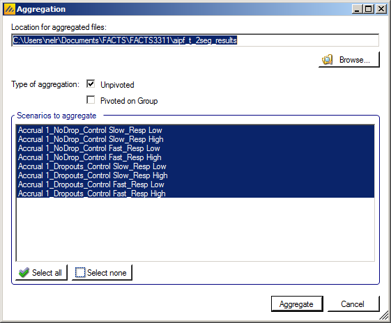
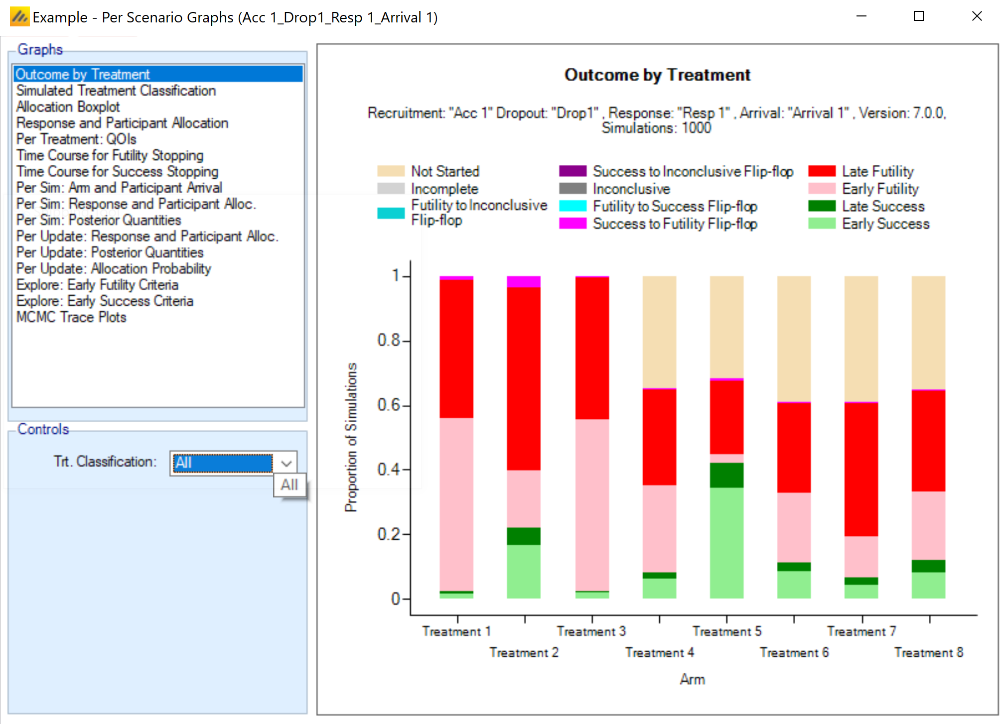

FACTS Platform Trials is useful for simulating trials in which there are a number of treatments being tested against a common control arm. Unlike in the FACTS Core engine, each of these treatments is meant to stand alone, and decisions are made on individual arms rather than at the trial level. As a result, there is not expected to be a dose-response relationship between the treatments. Two common goals of platform trials are to find many effective treatments among a set of treatments or to find a single effective treatment arm as quickly as possible. Treatments in a platform trial can leave the trial when a decision has been made for that arm or they have reached their sample size cap, and new treatment arms can enter when they are available to begin randomizing.
FACTS V7.0 was the first version of FACTS to feature a Platform Trial simulator.
This first version of the Platform Trial simulator FACTS provides fairly limited options for the statistical analysis:
The endpoint can be Continuous or Dichotomous.
Treatments are compared to a common control arm - either all randomized controls or concurrent controls only.
Trial Updates (a.k.a. interim analyses) can be specified in a number of ways: fixed intervals by time, the number of subjects recruited, the number of subjects complete up to a specified visit or the number of subjects who have had the opportunity to complete up to a specified visit.
Milestones are defined that apply to each treatment arm separately and different decision rules or thresholds can be defined based on which milestones have been reached by the arm.
Updates can be organized in one of three ways:
Updates occur whenever an arm meets a milestone, and that arm’s appropriate milestone rules are checked.
Updates occur on a regular basis, and at each update each arm is checked to see if it has passed a new milestone, and if it has, the appropriate milestone rules are checked.
Updates occur on a regular basis, and the milestone rules are checked for the highest milestone that has been passed. This allows that a particular milestone’s rules are checked repeatedly if updates are frequent.
The FACTS Platform Trail Design GUI
The FACTS Platform Trial GUI conforms to the standard FACTS GUI layout, with information and displays divided across various standard tabs (Figure 1).
- Trial
- The Trial Tabs are for entering the main characteristics of the study and specifying the treatment arms to be tested in the study. This is where the user specifies the ‘given’ requirements, or constraints, of the trial to be designed.
- Virtual Response
- The Virtual Response tabs are for specifying the simulation of subject responses, specifying the mean response for each treatment arm and the dropout rates.
- Accrual
- The Accrual tab is for specifying the rate of subject accrual.
- Quantities of Interest
- The Quantities of Interest tabs are for specifying the quantities to be calculated during analyses for output in the results, and possible use in adaptive allocation, early stopping and final evaluation decisions.
- Design
- The Design tabs are for specifying the statistical analysis to be used. These are the design choices open to the trial biostatistician and can include how to model the final responses, what decisions to take at trial updates and how to make decisions for individual treatment arms. The expected consequences of these design choices are then estimated by running simulations of the trials using the various virtuaresponse profiles defined.
- Simulation
- On the Simulation tab, the user controls and runs simulations and can view the simulation results.
Also on the menu bar, on the right hand side of the FACTS Window, is a button labeled “Notes”; clicking this button reveals a simple “notepad” window in which the user can maintain some simple notes that will be stored within the “.facts” file.


The notepad window comes with two further buttons: one to change the window to a free floating one that can be moved away from the FACTCS window; and the other to close it.
The Notes field can be used for any text the user wishes to store with the file. Suggested uses are: to record the changes made in a particular version of a design and why; and to comment on the simulation results. This will help when coming back to work that has been set aside, to recall what gave rise to the different version of a design.
The Trial tab
Trial Info
The Trial Info sub-tab provides parameters for specifying characteristics of the platform trial, including whether the design is adaptive, the sample size, the number of arms allowed to enroll simultaneously, and the time to observe the endpoint.
Design Options:
Enable adaptive features
Specify whether the design is adaptive. If adaptive features are not enabled, some adaptive-specific parameters and tabs are hidden, such as the tabs for defining trial updates, early stopping criteria, and adaptive allocation options on the allocation tab.
Use longitudinal modeling
Currently, longitudinal modelling is not implemented for the platform trials engine.
Endpoint Specific Inputs
Include simulation of baseline
Whether to simulate participant’s baseline score or simply change from baseline. If simulating baseline, whether the analysis is based on change from baseline or final endpoint value.
Enable special longitudinal options
Special longitudinal options are not enabled currently in FACTS platform trials.
Trial Information
The platform trial will automatically terminate when all of the defined treatments have had a chance to enter the trial and complete their enrollment and follow-up. Arms that attempt to join the platform, but are not allowed to, are considered complete.
Max enrollment time (wks)
You may limit the total enrollment time of the platform as a whole. If the trial reaches this time limit it stops and a final analysis is performed.
Max number of participants
You may limit the total number of subjects that can be enrolled to the platform. If the trial reaches this number of subjects it stops accruing, follows up subjects, and performs a final analysis.
Max successful treatments
You may stop the platform when a specified number of successful treatments have been found. This is useful for platfroms only interested in finding a specific number of successful treatments.
Max participants per treatment
Each arm is only allowed a specified maximum number of subjects to be enrolled to them. When an arm reaches this cap, it stopps accruing new subjects, but continues collecting follow-up on those that have been accrued. At full follow-up the arm specific final analysis is performed.
Max concurrent treatments
This option allows you to specify the maximum number of non-control treatments that can be enrolling during the platform. If there are fewer than this number of active arms enrolling, then new arms are allowed to enter the platform. If there are already arms randomizing equal to the value provided here, then no new treatment arms are allowed to join the platform. Treatment arms that are ready to begin enrolling, but are not allowed to start, begin a waiting period.
Response
Specify whether a higher response indicates the subject improving or worsening (and thus whether a higher or lower mean response is a good thing).
Schedule of Post Baseline Visits
Enter the time, in weeks, it takes to observe the final response for a subject after enrollment. No visit schedule is currently available, since longitudinal modeling has not been included in FACTS Platform Trials.
Trial Arms
Definition
This sub-tab is used to specify the set of arms that will be considered for participation throughout the course of the platform trial. Not all of these arms must accrue subject in each simulated trial, and which arms do accrue subjects depends on the state of each individual trial.
In the current implementation, a control arm is required.
Clicking the “Add” button creates a new active arm. Selecting a row, and clicking “Delete Arm” will remove the selected active arm. Clicking “Clear all arms” will delete all active arms from the table. The arms names can be changed in the table.
Arms are considered independent in the platform trial engine, so Index (d) ordering is irrelevant.
The number of arms defined here determines the maximum number of treatments that can enter the simulated trials. If the simulation does not stop through meeting one of the optional maximums that can be specified on the Trial > Trial Info tab, then it will stop when the last treatment from this list to complete enrollment completes the follow-up of the last patient allocated to it.
Arrivals
The arrivals sub-tab is used to specify the timing for treatment arms becoming available in the trial simulation. In the current implementation, the control arm is always available starting at time 0. Multiple arrival schedules may be set up by adding multiple profiles.
For each arm defined on the Trial Arm > Definition tab, the Arrivals tab requires 3 inputs.
Earliest/Latest Possible Arrival (wks)
These column specify the range of times (in weeks) that an arm becomes available to enter the trial. For a given simulation, the actual arrival time is simulated uniformly between the earliest and latest possible times. To simulate a trial with an arm that always enters at the exact same time provide the same value for the earliest and latest possible arrivals for the arm.
Once an arm has reached its time of arrival, it is allowed to enter the trial if:
There are less than ‘max concurrent treatments’ currently enrolling in the trial, and
The trial is performing:
updates at milestones,
updates on a regular schedule and it is executing an update,
updates on a regular schedule and arms can enter between updates.
Withdrawn If Not Used Within
This column specifies how long an arm will wait to begin enrolling in the trial before it “gives up” and withdraws from the trial. That is, if the arm becomes available while there are already more active treatment arms than the max concurrent treatments (as specified on the Trial > Trial Info tab), then the arm must wait before being allowed to enter the trial. In that case, if no arm leaves the trial before the end of the waiting period, the waiting arm will withdraw and never enter the trial.
In the case of a tie in arrival times, the lower-indexed arm is entered into the trial first.
To create a trial in which arms never “time out” and withdraw from the study, enter a very large value in the Withdrawn if not used within column.
Variants
On this tab the user can specify that a number of design variants should be created. Currently the only two design features that can be changed are
the maximum sample size per treatment.
The maximum number of concurrent treatments at any time.
If “multiple variants” is checked then the user can specify that simulations setups should be created for each simulation scenario with versions of the design with a different maximum number of subjects.
The user enters the number of variants they wish to create. Then in the resulting table, enter different “Maximum Participants per Treatment” and “Max Concurrent Treatments” for each variant. On the simulations tab FACTS will then create a copy of all the scenarios to run with each variant.
In the above screenshot, 6 variants have been created testing 3 x 2 combinations of Max participants per treatment of 80, 90 and 100 and Max concurrent treatments of 3 and 4. These will override the values for these parameters that have been specified on the Trial Info tab. It there are for example 2 response profiles to simulate, this will give 6 x 2 scenarios to simulate:
Virtual Subject Response
As with all FACTS design engines the Virtual Subject Response tab allows the user to explicitly define virtual subject response profiles, and/or to import virtual externally simulated patient responses from an exteral file. When simulations are executed, they will be executed for a specific scenario – where a scenario is a combination of one of each type of profile – dose response, longitudinal (not yet implemented), accrual, and dropout.
The VSR tab in the platform trials engine differs from the VSR tab in the Core engines in a few ways. The biggest changes are the treatment classification method and that treatment efficacies can be simulated from distributions in the platform trials engine.
Treatment Classification
Many outputs and graphs depend on a classification of the treatment effect as “good,” “mediocre,” or “unacceptable.” The thresholds provided on this tab are used in this classification. These treatment effect thresholds are applied to the true effect size for the simulation. For fixed effects, a treatment arm will be categorized the same in all simulations, but if sampled from a distribution, its categorization may vary from simulation to simulation. This categorization is used for some operating characteristic output such as “The number of good arms that were successful” and plots.
An example of how this can be important is considering a quantity like power: the probability of success given the treatment has some assumed level of effect. When the treatment effect is assumed to have some fixed value this calculation is easy. When the treatment effect is drawn from a distribution, sometimes the effect is strong, but sometimes it’s weak or even null/negative. Creating a classification system allows for the replacement of a traditional “power” with the probability of success given that the arm’s efficacy falls into the “good” class.
It’s still typical to consider an arm’s Type I error to be the probability of success given the arm has a fixed efficacy exactly equal to the control arm.
Response Specification
This tab allows for the specification of the efficacy assumptions for the control and treatment arms in the platform. It is expected that multiple VSR scenarios will be created, so that the design can be simulated across various treatment effect assumptions.
For a continuous endpoint, the control arm can have a known mean response or a distribution of potential control rates. The standard deviation of the final response is always assumed as a fixed value. The treatment effects for a continuous trial can be specified as known means, known changes from the control arm, or simulated from a distribution of effects.
For a dichotomous endpoint, the control arm can have a fixed assumed response rate or a response rate drawn from a distribution. The treatment arms can be specified has response rates, change from control on the probability scale, change from control on the log-odds scale, or have a change from baseline drawn from a distribution.
Arm Response
This sub-tab allows the user to set up several scenarios for how the true response to be simulated for each treatment arm.
Two types of inputs are needed for a given scenario:
The mean response for each treatment arm. There are three ways that the mean response can be specified.
Fixed mean response. This specifies the actual mean value for the arm in the Value column. This option is somewhat redundant with the fixed mean effect option, except in the case when the control arm is sampled from a distribution.
Fixed mean effect. This specifies the difference between the treatment arm and the control arm in the Value column. Note: FACTS does not use the convention that positive effects always indicate improvement. I.e., if “Lower response is improvement” is specified on the Trial > Trial Info tab, an effective arm should have a negative effect value.
This option is not available for the control arm.A distribution. Rather than specifying a specific value for the mean value, a distribution of values can be chosen. Each simulated trial will then have a (possibly) different value for the mean response for the arm. Distributions will be available for selection in the drop-down menu for the treatment arms, with one option for each distribution profile set up on the Virtual Response > Explicitly Defined > Treatment Distribution sub-tab. If a distribution is chosen, the value in the Value column is ignored.
If this selection is made for the control arm, the selection is called “Sampled”, and the distribution is specified on this tab, in the “Control Sampled Mean Response” box.
If a baseline value is not being simulated, the final response simulated is equivalent to ‘change from baseline,’ where baseline is always assumed to be 0. If baseline is being simulated, the user can select whether the response to be analyzed is the change from baseline or absolute response (the option is selected on the Study tab). Depending on that selection, the response specified on this tab is either change from baseline or absolute response.
- The standard deviation of the response – either through a common SD of response for all treatment arms, or by specifying the standard deviation for the response on each treatment arm separately. [Note that the total variance in the observed final responses can be greater than this if a baseline adjustment for subject response is specified]
This sub-tab differs for a dichotomous endpoint in that there are options for how to specify the treatment effect, and no specification of a standard deviation or baseline value is required. The response rate must be specified for each arm. There are four ways that the mean response can be specified.
Fixed response rate. This specifies the actual response rate for the arm in the Value column. This option is somewhat redundant with the fixed effect option, except in the case when the control arm is sampled from a distribution.
Fixed effect (rate). This specifies the response rate difference between the treatment arm and the control arm in the Value column. Note: FACTS does not use the convention that positive effects always indicate improvement. I.e., if “Lower response is improvement” is specified on the Trial > Trial Info tab, an effective arm should have a negative effect value. If an effect size would cause a value to be outside of the range [0, 1], then it is set at the appropriate boundary.
This option is not available for the control arm.Fixed effect (log-odds). This specifies the Value column as the difference between the logit of the response rate for the treatment arm and logit of the response rate for the control arm.
This option is not available for the control arm.A distribution. Rather than specifying a specific value for the response rate, a distribution of values can be chosen. Each simulated trial will then have a (possibly) different value for the response rate for the arm. Distributions will be available for selection in the drop-down menu for the treatment arms, with one option for each distribution profile set up on the Virtual Response > Explicitly Defined > Treatment Distribution sub-tab. If a distribution is chosen, the value in the Value column is ignored.
If this selection is made for the control arm, the selection is called “Sampled”, and the distribution is specified on this tab, in the “Control Sampled Response Rate” box.
Treatment Distribution
This tab is used to set up distribution profiles, so that the arm response is drawn randomly for each simulated trial. Any distribution profile that is added on this sub-tab will appear as an option in the drop-down menu for the Mean Fixed/Sampled column in the Arm Response sub-tab. There is an auto created treatment distribution created by default on this tab, so “Sampled” from a distribution can be selected on the Arm Response tab before visiting the Treatment Distribution tab.
For each distribution profile, three components must be established by the user:
Response vs Effect Size. This selection determines whether the value being simulated is the actual mean response or a difference from the control arm response. Note: FACTS does not use the convention that positive effects always indicate improvement. I.e., if “Lower response is improvement” is specified on the Trial > Trial Info tab, an effective arm should have a negative value if Effect Size is the selection.
Prob same as control / Prob effect size is 0: The distribution that is simulated will be a mixture distribution with a point mass on the value of the control arm, and the remaining probability assigned to a continuous distribution. This value specifies the probability assigned to the point mass. Values of 0 are allowed, meaning that only the continuous distribution would be utilized.
The distribution for the continuous portion of the mixture. Currently, three distributions types are available.
The normal distribution, which requires the specification of the mean and standard deviation of the distribution.
The truncated normal distribution, which requires the specification of the mean and standard deviation of the (non-truncated) distribution, along with the minimum and maximum values that are to be allowed. Note: if the maximum (minimum) value is left blank in the gui, the value is interpreted as infinity (negative infinity), allowing for one-sided truncation.
The generalized beta distribution, which requires the specification of the minimum, maximum, mean, and standard deviation. Note that not all combinations of values lead to a valid specification of the beta distribution. The mean must be between the minimum and maximum, and the standard deviation must then be no larger than:
\[\sqrt{(Maximum - Mean) \bullet (Mean - Minimum)}\]
This tab is used to set up distribution profiles, so that the arm response rate is drawn randomly for each simulated trial. Any distribution profile that is added on this sub-tab will appear as an option in the drop-down menu for the Response Rate Fixed/Sampled column in the Arm Response sub-tab. The options here are somewhat expanded relative to the continuous endpoint version. The user must specify three components:
Response Rate, Effect (Response Rate), Log-Odds, Effect (Log-Odds). This selection determines both whether the value being simulated is: a) the rate or log-odds (logit of rate) and b) the actual value or an effect - difference from the control arm response. Note: FACTS does not use the convention that positive effects always indicate improvement. I.e., if “Lower response is improvement” is specified on the Trial > Trial Info tab, an effective arm should have a negative value if Effect Size is the selection.
Prob same as control / Prob effect size is 0: The distribution that is simulated will be a mixture distribution with a point mass on the value of the control arm, and the remaining probability assigned to a continuous distribution. This value specifies the probability assigned to the point mass. Values of 0 are allowed, meaning that only the continuous distribution would be utilized.
The distribution for the continuous portion of the mixture. Currently, three distributions types are available.
The normal distribution, which requires the specification of the mean and standard deviation of the distribution – available only for if log-odds or effect (log-odds) is selected in step 1.
The truncated normal distribution, which requires the specification of the mean and standard deviation of the (non-truncated) distribution, along with the minimum and maximum values that are to be allowed. Note: if the maximum (minimum) value is left blank in the gui, the value is interpreted as infinity (negative infinity), allowing for one-sided truncation. Allowed for all selections in step 1.
The generalized beta distribution, which requires the specification of the minimum, maximum, mean, and standard deviation. Note that not all combination of values lead to a valid specification of the beta distribution. The mean must be between the minimum and maximum, and the standard deviation must then be no larger than:
\[\sqrt{(Maximum - Mean) \bullet (Mean - Minimum)} \]This option is allowed for all selections in step 1.
Note that if the selection in step 1 is Effect (Response Rate), it is possible to specify a distribution that has support beyond the range of [0, 1] for the response rate (particularly if the control rate is sampled, since the control rate for any simulation may draw a rate near the boundary). In this case, the distribution in truncated to ensure a rate in the range [0, 1].
Baseline (Continuous Only)
Response is Change from Baseline
If the endpoint is continuous, then there will be a Baseline sub-tab within the Response Specification tab.
If simulation of baseline has been included on the Study > study Info tab, if response is change from baseline then the explicitly defined dose response is still in terms of change from baseline, and a new virtual subject response tab is available for specifying the baseline score.
The simulation of distribution of baseline scores is specified using a normal distribution –with user specified mean and standard deviation and optionally applied upper and lower bounds to reflect limitations on the score range or screening criteria. Note that if the observed baseline score is truncated, then the true mean and SD of the baseline are likely to be different from these values of the mean and SD which are before truncation.
Either baseline is simulated separately from the final response (for use with BOCF), or the simulation of the final response can include a baseline dependent element.
If adjusting the final response based on baseline, then the user selects “Use Baseline Adjustment for Subject Response” and supplies 3 parameters:
- \(\beta\)
- a coefficient that reflects the degree of influence of baseline on final score and the degree of variability in the final score due to baseline.
- c
- a centering offset, typically the expected mean of the observed baseline scores
- s
- a scaling element, typically set to the expected SD of the baseline.
Example – in the above screenshot a baseline of mean 25 and SD 10 has been specified – so a centering of 25 and scaling of 10 is used. Wishing to simulate an overall SD of 5 in the final change from baseline and apportion two-thirds the variance to baseline, Beta has been set as follows:
The desired final variance is 25 (52), divided between 1/3rd dose response and 2/3rd baseline effects.
The SD of the simulated response is set to 2.89 \(\sqrt{\left( 25*\frac{1}{3} \right)}\)
The SD of the scaled baseline score is 1, so to contribute half the final variance of 25, Beta is set to 4.08 \(\sqrt{\left( 25*\frac{2}{3} \right)}\)
Note that when simulating a baseline effect in this way, limiting the range of baseline by specifying upper and lower cut-offs – which might be natural limits of the endpoint, or due to inclusion / exclusion criteria in the protocol – can significantly reduce the variance in the final endpoint due to the baseline effect.
Response is Final endpoint
If the response is specified to be final endpoint score, then baseline is specified as above, but the explicitly defined dose response is now defined in terms of final endpoint.
Dropout Rate
The probability of a subject dropping out before observing their final endpoint value is provided by arm. There is no longitudinal model, so Dropouts Per Arm Per Visit cannot be selected.
Accrual
The Accrual tab provides an interface for specifying accrual profiles; these define the mean recruitment rate week by week during the trial. During the simulation, the simulator uses a Poisson process to simulate the random arrival of subjects with the specified mean accrual rate.
Accrual profiles are list on the left of the screen, as depicted below. These accrual profiles may be renamed by double-clicking on them, and typing a new profile name. After creating a profile the user must create at least one recruitment region. Early in the trial design process, detailed simulation of the expected accrual pattern is typically not necessary and a single region with a simple mean accrual rate is sufficient.
To model more accurately the expected accrual rates over the trial, the user may specify multiple regions for each accrual profile and separately parameterize them. Regions are added via the table in the center of the screen (Figure 7‑1). Within this table, the user may modify:
the peak, mean weekly recruitment rate,
the start date (in weeks from the start of the trial) for this recruitment region,
whether the region will have a ramp up phase and if so when the ramp up will be complete (in weeks from the start of the trial).
Whether the region will have a ramp down, and if so when the ramp down start and when the ramp down will complete (in weeks from the start of the trial).
Ramp up/ramp down define simple linear increase/decreases in mean recruitment rate from the start to the end of the ramp. Note that simulation of accrual is probabilistic but ramp downs are defined in terms of time, so even if ramp downs are planned so that at the average accrual rate they will occur as the trial reaches cap, there is a risk in simulations when accrual has been slower than average, that ramp downs occur before the full sample size is reached. It is advisable to have at least one region that doesn’t ramp down to prevent simulations being unable to complete.
A graph of the recruitment rate of the highlighted region is shown as well. As the recruitment parameters are changed, the graph will update to show the time at which full accrual is reached. An accrual profile that does not reach full accrual is invalid and cannot be used to run simulations.
In the screenshot above you can see the two step ramp up in accrual from four regions – each starting at different offsets into the trial.
Note that the accrual profile graph is only the mean of the actual accrual per month; the simulated accrual is done using exponential distributions for the intervals between subjects, derived from the mean accrual profile specified here. Thus, some simulated trials will recruit more quickly than the specified rate, and some more slowly.
There are commands to import and export region details from/to simple external XML files. When importing, the regions defined in the external file are added to the regions already defined, they don’t replace them.
This is an example of a very simple region file defining just one region:
<?xml version="1.0" encoding="utf-8"?>
<regions>
<region>
<name>Region 1</name>
<rate>5</rate>
<start>0</start>
<ramp-up />
<ramp-down />
</region>
</regions>Quantities of Interest
The Quantities of Interest (QOI) tabs allows the user to specify which statistical quantities to calculate at each interim, either to ensure the values are output for perusal and analysis by the user, or for use within the trial design for adaptation or decision making.
The platform trials engine QOI tab is largely the same as the FACTS Core QOI tab, so the differences between the two engine’s QOI tabs are the main focus of this section.
Analysis Population
Unlike in the FACT Core QOI tab, the Posterior Probability, Predictive Probability, and p-value QOIs have an option to select the Analysis Population used to calculate them. The analysis population can either be “All Participants” or “Concurrent Controls.”
The “All Participants” selection computes all model quantities based on the data from all participants in the trial at the time of the analysis, regardless of the arm assignment, including arms that are no longer active in the trial.
The “Concurrent Controls” selection restricts the database to only the treatment arm being evaluated and participants randomized to the control arm concurrently with that arm’s enrolment. The definition of concurrence is those participants randomized to one of these two arms from the time of analysis back to the start time of the treatment arm (when the arm became available for randomization rather than when the first patient was actually randomized), plus a window of time prior to that, as input on the Design > Control Response tab.
When using “Concurrent Controls” models, each treatment arm has it’s own model that is run on its individual dataset. An arms QOIs are calculated based on that arm’s model, and no QOIs for any other arm are calculated from the concurrent dataset of an arm. Thus, when a final analysis is run for a treatment arm, concurrent QOIs for other arms are not computed. When an arm is removed from the study, its concurrent dataset is locked. This means that the concurrent QOIs for an arm that has been removed in the study will persist as the final analysis calculated QOIs for that arm, and will continue to appear in the trial output.
Lack of Decision Quantities QOIs
In the FACTS Core engine, one must choose the arm that should be used to pick a single value of a QOI that should be compared to a threshold. This is because in Core, multiple arms are used to make a single trial-wide decision. In FACTS Platform Trials, a decision is made separately for each arm. As such, there is no need to specify decision quantity QOIs in FACTS core. Decisions for an arm are always made based on that arm’s QOI value.
Arms Included in Pr(Max) Calculation
The Pr(Max) QOI in the FACTS Platform Trial simulator comes in 3 versions:
- ** All arms** -- Pr(Max) across all treatments that have been in the trial
(including treatments that are complete). This might be used in
a treatment's early futility condition for example.
- **Active Arms** -- Pr(Max) across the currently active treatments (treatments
enrolling and treatments that have finished enrolling but are
stilling following-up).
- **Randomizing Arms** -- Pr(Max) across all the currently randomizing treatments. This
might be used to guide response adaptive randomization, for
example.Treatment Arm Dosing
Unlike FACTS Core, the Platform Trial simulator does not assign each treatment arm an effective dose level, and thus the concept of an MED or EDq arm is irrelevant and not available.
Predictive Probabilities
Predictive probabilities in the Platform Trial simulator are restricted to predictions for future trials, precisely as defined for FACTS Core (prediction of a separate trial with 1:1 treatment:control randomization). Within-trial predictive probabilities are not currently implemented.
P-value Adjustments
P-values do not offer Bonferroni or Dunnett’s adjustments.
Design
The Design tab sets up prior distributions for the parameters, determines the participant allocation scheme, and establishes decision-making timing and criteria.
Control Response
This sub-tab is used to set up the normal prior distribution for the control arm. There are two separate priors to create - one for the all participants model, and one for the concurrent controls only model.
In the all participants model, only the prior mean and standard deviation for the shared control arm must be entered. The treatment effect priors are specified on the Treatment Response tab. All arms are modeled independently in the platform trials engine.
Additionally, the Concurrent Control box allows for the specification of the fixed normal prior for the control arm estimate for all of the individual concurrent controls models. The concurrent control arm esimate for all arms has the same prior. There is also a box to specify a window before the arms begin randomizing in which the randomized control participants should be considered concurrent with an active arm. So, if it’s specified that FACTS should include participants up to “8” weeks from treatment entering trial, then all control subjects randomized between 8 weeks before an arm started randomizing to when an arm stopped randomizing (or the current time if still randomizing) are considered concurrent controls.
Treatment Response
This sub-tab is used to set up the prior distribution for the treatment arms and for the common standard deviation of the response. All treatment means are modeled independently. The user can specify a single normal prior that applies to each treatment arm or specify normal priors individually for each treatment arm.
This tab also contains the prior distribution for the standard deviation of the responses. The variance is modeled as an inverse-gamma distribution.
This tab also contains the method for handling missing data due to dropouts. Since longitudinal modeling is not yet implemented, the only method that currently applies is BOCF, if the endpoint is continuous and baseline data is simulated. Without longitudinal modeling to incorporate post-baseline visit data, the Bayesian multiple imputation from post-baseline method will ignore dropouts.
Allocation
As long as “Enable Adaptive Features” is selected on the Trial > Trial Info tab, a radio button at the top of the Design > Allocation sub-tab allows choice between the two options for specifying arm allocation in the Platform Trial simulator.
Fixed Allocation
If Fixed Allocation is selected, then the blocking for randomization can either be done by creating a control:treatment block for each active arm, or by specifying a specific block size based on the number of arms currently randomizing. A radio button allows a choice between the two options.
Constant proportion allocated to control
For this option, the proportion of participants that are allocated to the control arm remains constant, regardless of the number of treatment arms that are active in the trial. The user specifies the number of control participants and treatment participants per sub-block. A full block consists of a number of sub-blocks corresponding to the number of active treatment arms being allocated. Within each sub-block, the number of control participants is fixed, while the participants for any particular active treatment arm may be spread across the sub-blocks.
As an example, suppose the inputs for constant proportion allocated to control are
Allocation to control per sub-block = 2
Allocation to treatments per sub-block = 6
Then, “Sub-block size per treatment” is calculated to be 8. Suppose that there are currently 3 active arms accruing and 1 control arm.
When randomizing participants, the blocks that subjects allocations are drawn from are then a total size of \(8*4=32\). It is guaranteed that each sub-block of 8 within the total 32 will have exactly 2 control. The other 24 slots in the block are completely suffled, so there is no guarantee that any number of a non-control arm will be contained within the sub-blocks.
Allocation dependent on the number of treatments
For this option, the proportion allocated to the control arm is allowed to vary depending on the number of active treatment arms in the trial. For each potential number of active treatment arms, the user specifies the allocation to each treatment and control by specifying Y and X for that allocation Y:Y:…:Y:X. That is, each treatment arm gets an equal number of participants per block, while the control has a (possibly) different allocation. The entire block of size X + Y*(# treatments) is then shuffled.
Adaptive Allocation
If Adaptive Allocation is selected, then the blocking for randomization can either be done by creating a block with a fixed proportion of controls and the same number of adaptively randomized slots per block, or by specifying a specific block size based on the number of arms currently randomizing. A radio button allows a choice between the two options.
A radio button allows a choice between two options for adaptive allocation.
Constant proportion allocated to control
This option works in the same way as the fixed allocation constant proportion allocated to control, except that the non-control parts of the block are randomly assigned to active treatment arms based on the response-adaptive randomization probabilities.
Allocation dependent on the number of treatments
For this option, the proportion allocated to the control arm is allowed to vary depending on the number of active treatment arms in the trial. For each potential number of active treatment arms, the user specifies the allocation to treatments and control for each block by specifying Y and X for that allocation Y:X of treatment to control. In this case (differing from the fixed allocation version), Y is the total allocation to treatment arms that are being adaptively allocated to. Notice that this Y:X differs from the Y:Y:…:Y:X pattern used for fixed allocation.
RAR Probabilities
The response-adaptive randomization (RAR) follows the same scheme as FACTS Core with respect to specifying the quantity(ies) of interest to use in determining allocation by arm. However, one important difference is the definition of the burn-in period.
Unlike FACTS Core, the burn-in period applies to each treatment arm separately rather than to the beginning of the trial.
The fixed allocation period for each treatment arm is specified at the bottom of the Allocation sub-tab. A treatment arm is not part of the RAR scheme until this number of participants have been enrolled and an analysis has been run to update the relevant QOIs. This latter aspect is distinct from FACTS Core, where an analysis is always run as soon as the allocation burn-in period has completed. The user may need to consider this aspect when determining how interim timing is to be set up. While in the burn-in phase, a treatment arm is allocated a fixed 1/T ratio of the adaptive allocation slots, where T is the number of active treatment arms.
Interims
The Interims sub-tab is used to specify the timing of trial update analyses and to specify which set of stopping criteria (if any) are to be applied at the update.
Update Frequency
Trial updates can be specified by time, information, a mixture of time and information, or by milestones reached.
Information is defined in the same way as FACTS Core, either by number of participants enrolled, number of participants with complete data (at a particular visit when longitudinal modeling is used), or number of participants who have had the opportunity to provide complete data (at a particular visit when longitudinal modeling is used). This definition of information is used for milestones as well as (optionally) update timing.
There are two distinct modes for trial update timing. A radio button toggles between “Updates occur whenever a treatment milestone is met” and “Updates occur on a regular schedule”. The former option is only available if Fixed Allocation is chosen on the Design > Allocation sub-tab.
Updates occur whenever a treatment milestone is met
In this mode, the only time an analysis is performed is when a treatment arm reaches a milestone – i.e. when a particular level of information has been reached, as specified in the Treatment Milestones portion of the sub-tab. The analysis will include all patients enrolled up to that point in time and provide model output for all arms, but decisions will be made only for the treatment arm whose milestone triggered the analysis. An analysis will also occur if a treatment arm has reached full follow-up on its maximum number of enrolled participants.
Updates occur on a regular schedule
In this mode, analyses are performed on a regular schedule based on time or information at the trial level (based on all participants). The timing of the first update can be specified as either time from the start of the trial or a fixed level of information. If adaptive allocation is being utilized, it may begin after this first analysis, provided that at least one individual treatment arm burn-in has been reached. After the first update, updates can be specified to occur at either fixed time intervals or after a fixed incremental level of information has accrued.
Note that in this mode, it is possible for treatment milestones to be skipped. E.g. if milestones were set up to occur at enrollment of 30, 55, and 80 participants, it is possible that a treatment arm could have 20 participants enrolled at one trial update and 60 participants at the next. If this were the case, any decisions associated with milestone 1 would be skipped and milestone 2 decisions would be evaluated instead.
An exception to the regular schedule is that an analysis is always performed whenever a treatment arm has reached its time for a final analysis. When this happens, an “off-schedule” trial update is performed, but no actions are taken except for the declaration of success or futility for the completed arm.
Subject Follow-up Options
The follow-up options mimic those of FACTS Core. However, in the Platform Trial simulator, the follow-up decision applies only to those participants that were allocated to the arm that is being stopped. Control participants and participants on other treatment arms continue to be followed.
Treatment Milestones
Treatment milestones are benchmarks that a treatment can reach that determine which success/futility fules should be used on the arm at that point in time. Before an arm has reached a milestone, there are no success or futility rules for that arm to evaluate. Once it reaches the first milestone, any time its status is evaluated it will use the set of success/futility rules that correspond to the most recent milestone that has been reached.
If updates occur every time a treatment milestone is met, then there is an update performed immediately every time an arm crosses a milestone threshold. This update is specific to the arm reaching the threshold, and while all arm data is used in the analysis models, only the arm that reached the threshold can make a decision at this milestone based update.
When updates are regularly scheduled, an update triggers based on the specified rules, and all arms have an opportunity to make a decision as long as they have reached at least the first milestone. Each arm keeps track of its own milestone benchmark and uses its own rules based on its progress through the platform. When regularly scheduled updates are selected, further input from the user is required in the Treatment Milestones box to dictate if milestone specific criteria can be assessed many times, or only once.
- Evaluate milestone criteria at each update
- With this selection, decisions associated with a particular milestone may be evaluated more than once. E.g., suppose milestones occurred at enrollment of 30 and 55 participants, and at a trial update with 32 participants enrolled, an early futility decision was evaluated. At the next trial update, if only 50 participants are enrolled, the early futility decision associated with milestone 1 would be re-evaluated with the updated model results.
- Evaluate milestone criteria when milestone first reached
- With this selection, a given milestone can be evaluated at most once – the first time it is reached (if a higher milestone hasn’t already been reached). In the example above, there would be no futility evaluation at 50 participants because the milestone had already been evaluated to 32 participants.
Success/Futility Criteria
The success/futility criteria sub-tab is used to specify the rules for early stopping and final evaluation. The basic structure of defining criterion with a QOI, a direction, and a threshold follows the conventions used in FACTS Core. However, the Platform Trial Simulator has some differences and additions, as outlined below.
Early stopping criteria can be set up for each milestone defined on the Design > Interims sub-tab. Use the Create button to add a sub-tab for early stopping for a chosen milestone. There are check-boxes to indicate if early futility or early success should be evaluated at the milestone. If the same decision criteria are to be used for multiple consecutive milestones, then only the first in the series needs to be created, and subsequent milestones will use the criteria until a new milestone decision rule applies. E.g., if the first and second milestones use early futility with the same stopping criteria, while early success is not allowed until the third milestone, the user need only set up the Milestone 1 and Milestone 3 criteria. For convenience, the “Copy from” button can be used to copy all criteria from a different milestone. The Final Evaluation criteria are applied for a treatment arm only if: 1) the treatment arm has enrolled participants and followed up its maximum number of participants, or 2) the treatment arm had previously hit an early stopping criteria and has completed all expected follow-up on its participants.
One fundamental difference from FACTS Core in setting up a decision criterion is that all QOIs are available, not the scalar “Decision QOIs” that FACTS Core uses. The value utilized is always the one corresponding to the treatment arm whose milestone is being evaluated.
The Platform Trial simulator also allows for differential specification of evaluation criteria by treatment arm. Any criteria that are specified on the “All Treatments” sub-tab apply to each treatment arm, and only on this sub-tab can the checkboxes for early stopping be checked. The combination of “All Treatments” criteria are combined with the criteria for an individual treatment in the following way.
The criteria on the “All Treatments” tab are combined with the AND/OR as specified on that tab to determine an “All Treatments” TRUE or FALSE.
The criteria on the individual treatment arm’s tab are combined with the AND/OR as specified on that tab to determine an individual treatment arm TRUE or FALSE.
The “All Treatments” and individual treatment results are then combined differently for early success or futility:
For success, the two are combined with an AND – both must be met (as typically a specific treatment arm would be allowed to have a stricter rule for success but not a laxer rule).
For futility, the two are combined with an OR – either can be met (as typically a specific treatment arm might be allowed more leeway to withdraw from a trial).
Simulation
The Simulation tab allows the user to execute simulations for each of the scenarios specified for the study. The user may choose the number of simulations, whether to execute locally or on the Grid, and modify the random number seeds.
N.B. Each time the FACTS application opens, the “Number of Simulations” will be set to the number of simulations last run for this design. If completed results are available, the actual number of simulations run for each scenario is reported in the ‘Num Sims’ column of the results table. The value displayed in the “Number of Simulations” control is the number of simulations that will be run if the user clicks on the ‘Simulate’ button.
Note also that if a scenario uses an external VSR file or directory of external files1, the number of simulations will be rounded down to the nearest complete multiple of the number of VSR lines or external files. Unless the number of simulations requested ‘S’ is less than the number of VSR lines or external files, in which case just the first S are run. Finally note that the simulations will be performed in packets such that each packet only uses one external VSR line or file, so packet sizes may be smaller than requested.
N.B. FACTS uses Markov Chain Monte Carlo methods in the generation of simulated patient response data and trial results. In order to exactly reproduce a statistical set of results, it is necessary to start the Markov Chain from an identical “Random Seed”. The initial random seed for FACTS simulations is set from the simulation tab, the first thing that FACTS does is to draw the random number seeds to use at the start of each simulation. It is possible to re-run a specific simulation, for example to have more detailed output files generated, by specifying ‘start at simulation’.
Number of simulations and packet size.
Number of simulations is the number of times to simulate each scenario.
Start at simulation, should normally be left as ‘1’, unless you want to reproduce a specific simulation from a previous run – which can be useful for debugging. Say the 999th simulation out of a larger set of simulations displayed some unusual behavior, in order to understand why, one might want to see the individual interim analyses for that simulation (the “weeks” file), the sampled patient results for that simulation (the “Patients” files) and possibly even the MCMC samples from the analyses in that simulation. You can save the .facts file with a slightly different name (to preserve the existing simulation results), then run 1 simulation of the specific scenario, specifying that the simulations start at simulation 999 and that at least 1 weeks file, 1 patients file and the MCMC samples file (see the “MCMC settings” dialog) are output.
The parallelization packet size, this allows simulation jobs to be split into runs of no-more than the specified number of trials to simulate. If more simulations of a scenario are requested than can be done in one packet, the simulations are started as the requisite number of packets and the results combined and summarized when they are all complete – so the final results files look just as though all the simulations were run as one job or packet. FACTS tries to set a sensible default size given the overall number of simulations to be run.
When running simulations on the local machine FACTS enterprise version will process as many packets in parallel as there are execution threads on the local machine. The overhead of packetization is quite low so a packet size of 10 to 100 can help speed up the overall simulation process – threads used to simulate scenarios that finish quicker can pick up packets for scenarios that take longer, if the number of scenarios is not directly divisible by the number of threads packetization uses all threads until the last few packets have to be run and finally the “Simulations complete” figure can be updated at the end of each packet, so the smaller the packet the better FACTS can report the overall progress.
Random Number Seed
Even a small change in the random seed will produce different simulation results.
By default the same random number seed is used at the start of the simulation of each scenario - the “Same seed for all scenarios” option. This can lead to a degree of correlation between the simulation results of different scenarios,
If two identical scenarios are specified then identical simulation results will be obtained. The same may happen if scenarios or designs only differ in ways that have no impact on the trials being simulated, for instance designs that have no adaptation, or scenarios that don’t trigger any adaptation (e.g. none of the simulations stop early).
At times this can be useful. But it can also be misleading, to disable this feature select the “Different seed” option.
MCMC Settings
To set advanced settings for simulation, the user may click the “MCMC Settings” button, which will display a number of additional specifiable parameters for simulation in a separate window.

The first two values specify two standard MCMC parameters –
The length of burn-in is the number of the initial iterations whose results are discarded, to allow the MCMC chain to reach its equilibrium distribution.
The number of samples is the number of subsequent iterations whose results are recorded in order to give posterior estimates of the values of interest.
An additional MCMC parameter controls the sampling within sampling when the analysis includes imputation from a longitudinal or predictor model:
- The third parameter controls the number of MCMC samples taken between each imputation of missing data using the longitudinal model, the default value is 1. This parameter only has an effect if Bayesian imputation is being used to impute a significant proportion of your data. This allows the parameter estimates to converge somewhat for each set of imputed data, if the imputed data is only a small percentage of the overall data this is unnecessary. As a rough guide, if it at some early interims > 5% of the data being analyzed will be imputed, a value in the range 2 to 10 is recommended to avoid underestimating the uncertainty. A higher number should be used the greater the proportion of imputed data.
The last two parameters concern the output of the MCMC samples to a log file:
It is possible to have the design engine output the sampled values in the MCMC, in all of the interims of the first N simulated trials of each scenario by specifying the “Number of MCMC files to output” (setting N > 0). The resulting files, ‘mcmcNNNN.csv’, will be in the results directory with all the other results files for that scenario.
It is also possible to reduce the size of these files by specifying a “thinning parameter”.
Output files
The user can specify:
The number of simulations for which ‘Weeks’ files and ‘Patients’ files are written.
‘Weeks’ files record the data, analysis and recommendation at each interim.
‘Patients’ files record the patient responses simulated for the trial.
To run simulations
Click in the check box in each of the rows corresponding the to the scenarios to be run. FACTS displays a row for each possible combination of the ‘profiles’ that have been specified: - baseline response, dose response, longitudinal response, accrual rate and dropout rate. Or simply click on “Select All”.
Then click on the “Simulate” button.
During simulation, the user is prevented from modifying any parameters on any other tab of the application. This safeguard ensures that the simulation results reflect the parameters specified in the user interface.
When simulations are started, FACTS saves all the study parameters, and when the simulations are complete all the simulation results are saved in results files in a “_results” folder in the same directory as the “.facts” file. Within the “_results” folder there will be a sub-folder that holds the results for each scenario.
How many simulations to run?
After first entering a design it is worth running just a small number of simulations such as 10, to help check that the scenarios and design have been entered correctly. Things to check might be: a) making sure treatments seem to be entering the trial on a reasonable schedule (the “Per Sim: Arm and Participant Arrivals” graph can be useful in checking this), b) making sure the overall trial is stopping for the expected reason, c) the true response values match what was expected from the virtual response entries, d) milestones are being evaluated when expected.
Once the overall structure looks generally correct, it is usually worth quickly collecting rough estimates of the operating characteristics using around 100 simulations for each scenario. This amount is often enough to spot designs with very poor operating characteristics such as very high false positive rates, false negative rates, or over-enrolling arms that should stop early.
Once operating characteristics appear to be in a reasonable range, one might typically need 1,000 or more simulations of each scenario to better quantify operating characteristics. When the Virtual Response is using distributions, the number of simulations might need to be even higher, if one wants to identify operating characteristics over the full range of virtual responses, since some simulations may contain no virtual responses in a particular range.
The final number of simulations needed depends greatly on the operating characteristics one is focused on. If interest lies primarily in time to first success, this goal may require far less precision than, say, strict false positive rate control for a particular arm.
What packet size to use?
You must specify a packet size that is a factor of the number of simulations per scenario to run; this offers the following benefits:
If running locally a small packet size allows the simulation of an individual scenario to be divided between the different number of CPUs in your laptop or PC. This is beneficial because often some scenarios are quicker to simulate (e.g. they often stop early) than others; if simulations were being divided between cores simply at the scenario level, this would lead to idle cores, once the simulations had completed. Additionally if the number of cores did not directly divide into the number of scenarios there would be cores idle as the last scenarios were simulated.
The “Simulations completed” count will be updated more frequently.
If running on a grid then having a small packet size means the job can be distributed over more nodes in the grid and thus completed more quickly.
Note, the overhead of creating the packets and re-combining the results is low compared to the time to run the simulations.
Packet sizes of between 10 (when running 100 simulations) and 100 (when running 10000 simulations) are recommended.
Care should be taken when packetizing a scenario that includes an external data file to supply the virtual patient responses; in this situation, a of copy of the external file is included in each packet which can cause the packetisation process to run out of memory as the packets are being created. In this case, use a smaller number of larger packets, such as packets that are 1/10th of the total number of simulations.
FACTS Grid Simulation Settings
A user with access to a computational grid, may choose to run simulations on the grid instead of running them locally. This frees the user’s computer from the computationally intensive task of simulating so that they can continue other work or even shutdown their PC or laptop. In order to run simulations on the grid, it must first be configured, this is normally done via a configuration file supplied with the FACTS installation by the IT group responsible for the FACTS installation.
Simulation Results and “Show Other Columns”
In the center of the simulation tab, the summary simulation results are displayed. The individual columns are listed ans described below in Section 12. There are many columns of results, these are now organized into related groups of sub-windows, which can be displayed by clicking on the “Show other Columns” button.
These windows will show:
All all the summary columns
Highlights the columns shown on the main tab.
Timing the columns indicating timing information for treatment arms entry and exit
Allocation the columns that report of participant recruitment and allocation
Response the columns that report that estimated and true treatment responses
Probabilities the final estimates for the QOIs that were computed for the trial
Observed the dropout rates by arm and visit
Model Parameters the columns that report the estimates of the values of the model parameters.
Simulation Results A window that displays the individual simulation results for the currently selected scenario.
Simulation Duration A window that displays the timing of how long each scenario took to simulate
Right Click Menu
Clicking the Right-hand mouse button on a row in the simulations tab brings up a short cut menu:

These provide access to all the actions available from the “Results Options” – except aggregation. These will respectively:
Open windows showing the various “Other Columns” options described above
All
Highlights
Timing
Allocation
Observed
Probabilities
Model parameters
Simulation results: Opens a window that displays the individual simulation results for that scenario. The results initially displayed are the ‘highlights’ columns, similarly to the summary results (see below) the results columns are collected into sub-groups, windows of these subgroups can be opened from the Right Click menu of the Simulation Results highlights window.
Simulation Duration: Opens a window that displays run-time information.
Show Per Scenario Graphs: Opens the FACTS graph control displaying the graphs for that scenario. See section 14 for details.
Show Across Scenario Graphs: Opens the FACTS graph control displaying the graphs comparing all scenarios.
Compare Scenarios in Airship: Opens the R AIRSHIP package for comparing results across scenarios, see the AIRSHIP User Guide for details.
Open Results Folder: Open a new Windows directory browser window showing the contents of the simulation results for that scenario.
Copy to Clipboard: Copies all the rows of the summary to the clipboard, as tab-delimited text.
Open in R: Opens R, loading in the result files for the currently selected scenario as separate data-frames (doesn’t load the aggregated files if they exist, for that use the “Open in R” button).
Design Report: Create a design report (a word document describing the design), see the Design Report User Guide for details.
Double Click
Double clicking on a row of simulation results opens a window listing the results of each individual simulation for that scenario. See section 15 below for a description.
Explore Results
This button displays the following options:
Show Per Scenario Graphs: Opens the FACTS graph control displaying the graphs for that scenario. See section 14 for details.
Show Across Scenario Graphs: Opens the FACTS graph control displaying the graphs comparing all scenarios.
Compare Scenarios in Airship: Opens the R AIRSHIP package for comparing results across scenarios, see the AIRSHIP User Guide for details.
Open Results Folder: Open a new Windows directory browser window showing the contents of the simulation results for that scenario.
Copy to Clipboard: Copies all the rows of the summary to the clipboard, as tab-delimited text.
Open in R
If aggregated results files have been created, then the Open in R button will start R and load the aggregated ‘.csv’ files.
If there are no aggregated files then the results files of the currently selected scenario are loaded. R can also be opened in this fashion by right clicking on a row in the simulation results table.
When FACTS starts R it writes out an R auto run startup script that loads the csv files into R as separate dataframes.
Aggregation
Aggregation combines the csv output from multiple scenarios into fewer csv files. The Aggregate… button displays a dialog which allows the user to select what to aggregate.

The default location for the aggregated files is the results directory for the study, but this can be changed.
Aggregation may be performed with or without pivoting on group, or both.
Unpivoted files will have one row for each row in the original files.
In pivoted files each original row will be split into one row per dose.
Where there is a group of columns for each dose, they will be turned into a single column with each value on a new row.
Values in columns that are independent of dose will be repeated on each row.
The default is to aggregate all scenarios, but any combination may be selected.
Pressing “Aggregate” generates the aggregated files.
Each type of csv file is aggregated into a separate csv file whose name begins agg_ or agg_pivot_, so agg_summary.csv will contain the rows from each of the summary.csv files, unpivoted. WeeksNNNNN.csv files are aggregated into a single agg_[pivot_]weeks.csv file. PatientsNNNNN.csv files are aggregated into a single agg_patients.csv file, but they are never pivoted because each row already refers to a single dose.
RegionIndex.csv is not aggregated.
Each aggregated file begins with the following extra columns, followed by the columns from the original csv file:
| Column Name | Comments |
|---|---|
| Scenario ID | Index of the scenario |
| Recruitment Profile | A series of columns containing the names of the various profiles used to construct the scenario. Columns that are never used are omitted (e.g. External Subjects Profile if there are no external scenarios) |
| Dropouts Profile | |
| Virtual Response Profile | |
| Treatment Arm Arrival Profile | |
| Agg Timestamp | Date and time when aggregation was performed |
| Sim | Simulation number. Only present in weeks and patients files. |
| Treatment | Treatment Arm. Only present if pivoted. |
Design Report
This button becomes enabled once there are simulation results, it uses an R script and R libraries to generate a MS Word document describing the design.
See the FACTS Design Report User Guide for details of what R packages need installing, how FACTS needs configuring to use the correct R instance, how the generate_report() function is run, and where the resulting report can be found.
The summary results columns
Highlights
These are the columns displayed on the simulations tab after simulations are completed. They can also be displayed in the separate “Highlights” results window.
| Column Title | Number of columns | Description |
|---|---|---|
| Select | 1 | Not an output column, this column contains check box to allow the user to select which scenario to simulate. The ‘Select All’ button causes them all to be checked. |
| Status | 1 | This column reports on the current status of simulations: Completed, Running, No Results, Out of date, Error. It is updated automatically. |
| Scenario | 1 | This column gives the name of the scenario, concatenating together the profile names from the following tabs: ‘Execution > Accrual’, ‘Virtual Response > Dropout Rate’, ‘Virtual Response > Arm Response’, ‘Trial > Trial Arms > Arrivals’ This is the same name as used for the results directory |
| Num Sims | 1 | The number of simulations that were run to produce the displayed results. |
| Random Number Seed | 1 | Base random number seed used to perform the simulations. |
| Mean Tr eatments Started | 1 | The average number (over the simulations) of non-control treatments that entered the trial and were eligible to enrollment participants. |
| Mean Tr eatments Analyzed | 1 | The average number (over the simulations) of non-control treatments that reached a final analysis within the trial – either because they reached an early stopping decision with no follow-up or because they completed follow-up on all participants. |
| Mean Good Tr eatments Analyzed | 1 | The average number (over the simulations) of “good” treatment arms that reached a final analysis, “good” as defined on the Virtual Response > Treatment Classification tab. |
| Mean Unac ceptable Tr eatments Analyzed | 1 | The average number (over the simulations) of “unacceptable” treatment arms that reached a final analysis, “unacceptable” as defined on the Virtual Response > Treatment Classification tab. |
| Mean Unac ceptable Tr eatments Analyzed | 1 | The average number (over the simulations) of “mediocre” treatment arms that reached a final analysis, “mediocre” as defined on the Virtual Response > Treatment Classification tab. |
| Mean S uccesses | 1 | The average number (over the simulations) of treatment arms that were declared successful at a final analysis. |
| Mean Good T reatment S uccesses | 1 | The average number (over the simulations) of “good” treatment arms that were declared successful at a final analysis, “good” as defined on the Virtual Response > Treatment Classification tab. |
| Mean Unac ceptable T reatment S uccesses | 1 | The average number (over the simulations) of “unacceptable” treatment arms that were declared successful at a final analysis, “unacceptabl” as defined on the Virtual Response > Treatment Classification tab. |
| Mean Mediocre T reatment S uccesses | 1 | The average number (over the simulations) of “mediocre” treatment arms that were declared successful at a final analysis, “mediocre” as defined on the Virtual Response > Treatment Classification tab. |
| Mean Fu tilities | 1 | The average number (over the simulations) of treatment arms that were declared futile at a final analysis. |
| Mean Good T reatment Fu tilities | 1 | The average number (over the simulations) of “good” treatment arms that were declared futile at a final analysis, “good” as defined on the Virtual Response > Treatment Classification tab. |
| Mean Unac ceptable T reatment Fu tilities | 1 | The average number (over the simulations) of “unacceptable” treatment arms that were declared futile at a final analysis, “unacceptabl” as defined on the Virtual Response > Treatment Classification tab. |
| Mean Mediocre T reatment Fu tilities | 1 | The average number (over the simulations) of “mediocre” treatment arms that were declared futile at a final analysis, “mediocre” as defined on the Virtual Response > Treatment Classification tab. |
| Mean Incon clusives | 1 | The average number (over the simulations) of treatment arms that were declared inconclusive at a final analysis. |
| Mean Good T reatment Incon clusives | 1 | The average number (over the simulations) of “good” treatment arms that were declared inconclusive at a final analysis, “good” as defined on the Virtual Response > Treatment Classification tab. |
| Mean Unac ceptable T reatment Incon clusives | 1 | The average number (over the simulations) of “unacceptable” treatment arms that were declared inconclusive at a final analysis, “unacceptabl” as defined on the Virtual Response > Treatment Classification tab. |
| Mean Mediocre T reatment Incon clusives | 1 | The average number (over the simulations) of “mediocre” treatment arms that were declared inconclusive at a final analysis, “mediocre” as defined on the Virtual Response > Treatment Classification tab. |
| Ppn S uccesses | T reatment Good | 1 | Amongst the “good” treatment arms that reached final analysis across all simulations, the proportion of those arms that were declared successful – “good” as defined on the Virtual Response > Treatment Classification tab. |
| Ppn Fu tilities | T reatment Good | 1 | Amongst the “good” treatment arms that reached final analysis across all simulations, the proportion of those arms that were declared futile – “good” as defined on the Virtual Response > Treatment Classification tab. |
| Ppn Incon clusives | T reatment Good | 1 | Amongst the “good” treatment arms that reached final analysis across all simulations, the proportion of those arms that were declared inconclusive – “good” as defined on the Virtual Response > Treatment Classification tab. |
| Ppn S uccesses | T reatment Unac ceptable | 1 | Amongst the “unacceptable” treatment arms that reached final analysis across all simulations, the proportion of those arms that were declared successful – “unacceptable” as defined on the Virtual Response > Treatment Classification tab. |
| Ppn Fu tilities | T reatment Unac ceptable | 1 | Amongst the “unacceptable” treatment arms that reached final analysis across all simulations, the proportion of those arms that were declared futile – “unacceptable” as defined on the Virtual Response > Treatment Classification tab. |
| Ppn Incon clusives | T reatment Unac ceptable | 1 | Amongst the “unacceptable” treatment arms that reached final analysis across all simulations, the proportion of those arms that were declared inconclusive – “unacceptable” as defined on the Virtual Response > Treatment Classification tab. |
| Ppn S uccesses | T reatment Mediocre | 1 | Amongst the “mediocre” treatment arms that reached final analysis across all simulations, the proportion of those arms that were declared successful – “mediocre” as defined on the Virtual Response > Treatment Classification tab. |
| Ppn Fu tilities | T reatment Mediocre | 1 | Amongst the “mediocre” treatment arms that reached final analysis across all simulations, the proportion of those arms that were declared futile – “mediocre” as defined on the Virtual Response > Treatment Classification tab. |
| Ppn Incon clusives | T reatment Mediocre | 1 | Amongst the “mediocre” treatment arms that reached final analysis across all simulations, the proportion of those arms that were declared inconclusive – “mediocre” as defined on the Virtual Response > Treatment Classification tab. |
| Ppn Good Tr eatments | Success | 1 | Amongst the treatment arms that reached final analysis and were declared successful (across all simulations), the proportion of those arms that were “good” treatment arms, as defined on the Virtual Response > Treatment Classification tab. |
| Ppn Unac ceptable Tr eatments | Success | 1 | Amongst the treatment arms that reached final analysis and were declared successful (across all simulations), the proportion of those arms that were “unacceptable” treatment arms, as defined on the Virtual Response > Treatment Classification tab. |
| Ppn Mediocre Tr eatments | Success | 1 | Amongst the treatment arms that reached final analysis and were declared successful (across all simulations), the proportion of those arms that were “mediocre” treatment arms, as defined on the Virtual Response > Treatment Classification tab. |
| Ppn Good Tr eatments | Futility | 1 | Amongst the treatment arms that reached final analysis and were declared futile (across all simulations), the proportion of those arms that were “good” treatment arms, as defined on the Virtual Response > Treatment Classification tab. |
| Ppn Unac ceptable Tr eatments | Futility | 1 | Amongst the treatment arms that reached final analysis and were declared futile (across all simulations), the proportion of those arms that were “unacceptable” treatment arms, as defined on the Virtual Response > Treatment Classification tab. |
| Ppn Mediocre Tr eatments | Futility | 1 | Amongst the treatment arms that reached final analysis and were declared futile (across all simulations), the proportion of those arms that were “mediocre” treatment arms, as defined on the Virtual Response > Treatment Classification tab. |
| Ppn Good Tr eatments | Inco nclusive | 1 | Amongst the treatment arms that reached final analysis and were declared inconclusive (across all simulations), the proportion of those arms that were “good” treatment arms, as defined on the Virtual Response > Treatment Classification tab. |
| Ppn Unac ceptable Tr eatments | Inco nclusive | 1 | Amongst the treatment arms that reached final analysis and were declared inconclusive (across all simulations), the proportion of those arms that were “unacceptable” treatment arms, as defined on the Virtual Response > Treatment Classification tab. |
| Ppn Mediocre Tr eatments | Inco nclusive | 1 | Amongst the treatment arms that reached final analysis and were declared inconclusive (across all simulations), the proportion of those arms that were “mediocre” treatment arms, as defined on the Virtual Response > Treatment Classification tab. |
| Ppn 1+ S uccesses | 1 | The proportion of simulations that had at least one treatment arm declared successful. |
| Ppn Good Tr eatments | 1+ S uccesses | 1 | The proportion of simulations that had at least one “good” treatment arm declared successful, “good” as defined on the Virtual Response > Treatment Classification tab. |
| Ppn Su ccesses: <Arm> | 1 per arm | Amongst simulations in which a final analysis was reached for the arm, the proportion of simulations where the arm was declared successful. |
| Ppn Fut ilities: <Arm> | 1 per arm | Amongst simulations in which a final analysis was reached for the arm, the proportion of simulations where the arm was declared futile. |
| Ppn Inconc lusives: <Arm> | 1 per arm | Amongst simulations in which a final analysis was reached for the arm, the proportion of simulations where the arm was declared inconclusive. |
| Ppn Good T reatment | E nrolled: <Arm> | 1 per arm | Amongst simulations in which the arm was open to enroll participants in the trial, the proportion of simulations in which the arm was actually “good”, as defined on the Virtual Response > Treatment Classification tab. |
| Ppn Unac ceptable T reatment | E nrolled: <Arm> | 1 per arm | Amongst simulations in which the arm was open to enroll participants in the trial, the proportion of simulations in which the arm was actually “unacceptable”, as defined on the Virtual Response > Treatment Classification tab. |
| Ppn Mediocre T reatment | E nrolled: <Arm> | 1 per arm | Amongst simulations in which the arm was open to enroll participants in the trial, the proportion of simulations in which the arm was actually “mediocre”, as defined on the Virtual Response > Treatment Classification tab. |
| Ppn Good T reatment | A nalyzed: <Arm> | 1 per arm | Amongst simulations in which the arm reached a final analysis in the trial, the proportion of simulations in which the arm was actually “good”, as defined on the Virtual Response > Treatment Classification tab. |
| Ppn Unac ceptable T reatment | A nalyzed: <Arm> | 1 per arm | Amongst simulations in which the arm reached a final analysis in the trial, the proportion of simulations in which the arm was actually “unacceptable”, as defined on the Virtual Response > Treatment Classification tab. |
| Ppn Mediocre T reatment A nalyzed: <Arm> | 1 per arm | Amongst simulations in which the arm reached a final analysis in the trial, the proportion of simulations in which the arm was actually “mediocre”, as defined on the Virtual Response > Treatment Classification tab. |
| Mean Duration | 1 | The average (in weeks) over the simulations of the duration of the trial from the start to completion of the trial. |
| Mean First Success Time | 1 | Amongst simulations that had at least one success, the average time (in weeks) at which the first success was declared. |
| Mean Part icipants | 1 | The average number of participants enrolled across all simulations. |
| Mean A vailable Time: <Arm> | 1 | The average time across simulations that the treatment arm became available to enter the trial (regardless of whether the trial ended prior to it becoming available). |
| Version | 1 | The FACTS version number at the time the simulations were run. |
Timing
| Column Title | Number of columns | Description |
|---|---|---|
| Status | 1 | This column reports on the current status of simulations: Completed, Running, No Results, Out of date, Error. It is updated automatically. |
| Scenario | 1 | This column gives the name of the scenario, concatenating together the profile names from the following tabs: ‘Execution > Accrual’, ‘Virtual Response > Dropout Rate’, ‘Virtual Response > Arm Response’, ‘Trial > Trial Arms > Arrivals’ This is the same name as used for the results directory |
| Mean Duration | 1 | The average (in weeks) over the simulations of the duration of the trial from the start to completion of the trial. |
| Mean First Success Time | 1 | Amongst simulations that had at least one success, the average time (in weeks) at which the first success was declared. |
| Mean A vailable Time: <Arm> | 1 per arm | The average time (in weeks) across all simulations at which the treatment because available for entry into the trial. Note: the available time is reported whether or not it became available after the end of the trial. |
| Mean Start Time: <Arm> | 1 per arm | Amongst simulations in which the arm became available to enroll participants, the average time (in weeks) that the arm became eligible for enrollment. |
| Mean End Time: <Arm> | 1 per arm | Amongst simulations in which the arm became available to enroll participants, the average time (in weeks) that the arm became stopped enrolling. |
| Mean Final Analysis Time: <Arm> | 1 per arm | Amongst simulations in which the arm reached a final analysis, the average time (in weeks) that the arm’s final analysis occurred. |
Allocation
| Column Title | Number of columns | Description |
|---|---|---|
| Status | 1 | This column reports on the current status of simulations: Completed, Running, No Results, Out of date, Error. It is updated automatically. |
| Scenario | 1 | This column gives the name of the scenario, concatenating together the profile names from the following tabs: ‘Execution > Accrual’, ‘Virtual Response > Dropout Rate’, ‘Virtual Response > Arm Response’, ‘Trial > Trial Arms > Arrivals’ This is the same name as used for the results directory |
| Mean Part icipants | 1 | The average number (over the simulations) of participants enrolled in the trial. |
| SD Mean Part icipants | 1 | The standard deviation of the number (over the simulations) of participants enrolled in the trial. |
| Mean Alloc.: <Arm> | 1 per arm | The average (over the simulations) of the number of participants enrolled onto the arm. |
| SD Alloc.: <Arm> | 1 per arm | The standard deviation (over the simulations) of the number of participants enrolled onto the arm. |
Response
| Column Title | Number of columns | Description |
|---|---|---|
| Status | 1 | This column reports on the current status of simulations: Completed, Running, No Results, Out of date, Error. It is updated automatically. |
| Scenario | 1 | This column gives the name of the scenario, concatenating together the profile names from the following tabs: ‘Execution > Accrual’, ‘Virtual Response > Dropout Rate’, ‘Virtual Response > Arm Response’, ‘Trial > Trial Arms > Arrivals’ This is the same name as used for the results directory |
| Mean Resp.: <Arm> | 1 per arm | Average (over the simulations) of the estimate of the mean response for the arm at the end of the trial. |
| SD Resp.: <Arm> | 1 per arm | Standard deviation (over the simulations) of the estimate of the mean response for the arm at the end of the trial. |
| Mean Sigma | 1 | Average (over the simulations) of the estimate of the SD of the dose response across all the treatment arms (‘sigma’) |
| SD Mean Sigma | 1 | Standard deviation (over the simulations) of the estimate of the SD of the dose response across all the treatment arms. |
| True Mean Resp: <Arm> | 1 per arm | True mean response from which the simulated participant data was sampled for the arm. |
| SD True Resp.: <Arm> | 1 per arm | True standard deviation of the simulated participant data for the arm. |
| Mean Baseline Beta | This is the mean (over the simulations) of the estimate of “Beta” in the Baseline Adjusted dose response model. | |
| SD Baseline Beta | This is the SD (over the simulations) of the estimate of “Beta” in the Baseline Adjusted dose response model. | |
| Mean Baseline | 1 | Average (over the simulations) of the estimate of the mean baseline score. |
| SD Baseline | 1 | Standard deviation (over the simulations) of the estimate of the mean baseline score. |
| True Mean Baseline | 1 | True mean from which baseline scores where simulated (including accounting for possible truncation of the baseline scores) |
| True SD Baseline | 1 | True standard deviation of the distribution from which baseline scores were simulated (including accounting for possible truncation of the baseline scores) |
Observed
| Column Title | Number of columns | Description |
|---|---|---|
| Status | 1 | This column reports on the current status of simulations: Completed, Running, No Results, Out of date, Error. It is updated automatically. |
| Scenario | 1 | This column gives the name of the scenario, concatenating together the profile names from the following tabs: ‘Execution > Accrual’, ‘Virtual Response > Dropout Rate’, ‘Virtual Response > Arm Response’, ‘Trial > Trial Arms > Arrivals’ This is the same name as used for the results directory |
| Mean Complete <Arm> | One per arm | This is the mean (over the simulations) of the number of subjects recruited per arm which have had their endpoint observed in this scenario. |
| Mean Complete Info <Arm> | One per arm | This is the mean (over the simulations) of information observed per arm as defined on the Interims tab (Subjects enrolled, Complete Data at Specified Visit, Opportunity to Complete at Specified Visit) in this scenario. |
| Mean D ropouts: <Arm>, <Visit> |
1 per arm per visit | Average (across the simulations) of the number of dropouts for the arm by visit. |
Probabilities
| Column Title | Number of columns | Description |
|---|---|---|
| Status | 1 | This column reports on the current status of simulations: Completed, Running, No Results, Out of date, Error. It is updated automatically. |
| Scenario | 1 | This column gives the name of the scenario, concatenating together the profile names from the following tabs: ‘Execution > Accrual’, ‘Virtual Response > Dropout Rate’, ‘Virtual Response > Arm Response’, ‘Trial > Trial Arms > Arrivals’ This is the same name as used for the results directory |
| <QOI>: <Arm> | 1 per arm per QOI | For each Posterior Probability, Predictive Probability, p-value, or Target QOI, this is the mean over the simulations of the estimate of the probability of the QOI for each dose. For each Target QOI this is the proportion of simulations where this dose was selected at the end of the trial as the dose with the greatest probability of meeting the target condition. The probability that each dose is the target at the end of a simulated trial is its marginal probability (the number of times it was the dose closest to the target in the MCMC sampling of the analysis at the end of the trial). |
Model Parameters
| Column Title | Number of columns | Description |
|---|---|---|
| Status | 1 | This column reports on the current status of simulations: Completed, Running, No Results, Out of date, Error. It is updated automatically. |
| Scenario | 1 | This column gives the name of the scenario, concatenating together the profile names from the following tabs: ‘Execution > Accrual’, ‘Virtual Response > Dropout Rate’, ‘Virtual Response > Arm Response’, ‘Trial > Trial Arms > Arrivals’ This is the same name as used for the results directory |
| Mean Sigma | 1 | Average (over the simulations) of the posterior estimate of sigma, the SD in the participant’s final responses. |
| SD Mean Sigma | 1 | Standard deviation (over the simulations) of the posterior estimate of sigma, the SD in the participant’s final responses. |
| Mean Baseline Beta | 1 | Average (over the simulations) of the estimate of the Beta parameter when Baseline Adjustment is Modeled. |
| SD Baseline Beta | 1 | Standard deviation (over the simulations) of the estimate of the Beta parameter when Baseline Adjustment is Modeled. |
Graphs of Simulation Results
To enable swift visualization and analysis of the simulation results, FACTS has a number of pre-defined graphs it can display. Full and detailed simulation results are available in ‘csv’ format files that can be loaded into other analysis tools allowing any aspect of the simulation to be explored. These files are described in Section 17 below.
Per Scenario Graphs
To view the graphs of the results of the simulations of a particular design variant in a particular scenario, select that row of scenario results by clicking on it and then click on the ‘View Graph’ button and select “Show Per Scenario Graphs”.
The graph display supports copying an image of the graph to the clipboard, to facilitate pasting them into documents and presentations. Right clicking on a graph brings up a short menu that allows the image of the graph to be copied to the clipboard or saved in ‘.png’ format to a file.
Many graphs have a number of controls to allow the graph to be tailored, standard graph controls available on most graphs are:
Set Y axis – this displays a dialog boxing allowing the user to fix the minimum and maximum of each of the Y axes and the number of ‘tick’ marks. (Not displayed if the ‘y’ value must lie in the interval 0-1.
Show Truth – this toggles whether the true response by arm is plotted.
Box and whisker plot conventions
The mean probability is plotted as a large dot.
The median value is plotted as a dashed line.
The 25-75th quantile range is plotted as the “box” portion of each point.
The “whiskers” extend to the largest and smallest values within 1 ½ times the interquartile range from either end of the box.
Points outside the whisker range are considered outliers, and are plotted as small blue dots. Note that it may be difficult to see all of these symbols if they are plotted at the same value.
Per Scenario Graphs
Outcome by Treatment

This graph summarizes the final status of each treatment arm in the trial, including availability, completeness, and conclusion. The “Trt. Classification” drop-down menu in the Controls box allows the user to specify whether the plot should be restricted to treatment effects with a particular classification.
Simulated Treatment Classification
This graph summarizes the treatment effect classification of each treatment arm in the trial. If no sampling is used for treatment arms, these bars will all be one solid color, but may show variation if either the control arm or the arm itself is sampled. The classification into “good,” “unacceptable,” and “mediocre” uses the definitions provided on the Virtual Response > Treatment Classification tab. The “General Outcome” drop-down menu in the Controls box allows the user to restrict the plot to treatment arms that reached a particular outcome. For example, choosing “Success” will show the distribution of treatment classifications for the arms only amongst arms that achieved a “Early Success,” “Late Success,” or “Futility to Success Flip” outcome.
Allocation Box and Whisker Plot
This graph displays a box and whisker plot of the number of subjects enrolled into each arm. These plots show:
- The distribution over all simulations of the number of subjects allocated to each arm shown as a box and whisker plot. In certain types of non-adaptive trials, the number may be the same in every simulation and the box and whiskers collapse to a single line.
Response and Participant Allocation
This graph shows for each treatment arm, the mean subject allocation, mean response and the 2.5%-97.5% boundaries of the estimated means over the simulations.
The blue bars show the mean number of subjects allocated.
The black dot-and-whisker shows the distribution of the true mean response across the simulations, as 2.5%, 50%, and 97.5% quantiles. This will only be a black dot if the response is fixed.
The green dot-and-whisker shows the distribution of the estimated response across the simulations, as 2.5%, 50%, and 97.5% quantiles.
Per Treatment: QOIs
These plots show box and whisker plots to display the distribution (across the simulations) of the final values for the QOIs. The drop-down menu in the Controls panel allows the user to change which QOI is displayed.
Cumulative Operating Characteristics Plot


There are two graphs, one that shows the cumulative proportion of durations across all simulations, and the other shows the cumulative proportion of subjects across all simulations.
Time Course for Stopping
There are two graphs, one that shows the distribution over time for stopping for futility and one for stopping for success.
 {width=“2.6453510498687662in” {width=“2.6453510498687662in”  {width=“2.641969597550306in” {width=“2.641969597550306in” |
| height=“2.6045395888014in”} height=“2.605594925634296in”} |
: Figure 5‑4 Adding a link to R
These graphs show the cumulative proportion of simulations that a treatment arm stopped for futility or success on the y-axis. On the Controls panel, the user can specify which treatment arm to display, and toggle the x-axis between time (in weeks) from the start of the trial or the number of participants enrolled on the treatment arm. If the simulated trial has success-to-futility (or futility-to-success) flip-flops, a separate line is drawn for the cumulative proportion of those outcomes.
Per Sim Graphs
The Per Sim graphs allow the user to select a particular Simulation to examine in detail. The simulation number is selected in the Controls box.

The control for selecting which simulation to display in the Per Sim graph
Per Sim: Arm and Participant Arrivals
This graph depicts an overview of a single simulated trial, providing timing information (in weeks). The graph contains several components:
A dashed line from the time that the arm became available for entry into the trial until the time time that it either entered the trial (began enrolling) or stopped waiting to enter the trial and withdrew. Note: if the arm began enrolling as soon as it became available, the dashed line will not appear.
A thick solid line from the beginning to end of the enrollment period.
A dot-dashed line from the end of enrollment to the time of final analysis. If there is no follow-up after an early stopping decision is made, then this line will not appear.
A symbol at the end of each treatment arm’s line indicating the final status of the treatment arm.
A symbol above the final status symbol indicating the treatment effect classification.
Optionally, checking the “Show Participant Arrivals” checkbox in the Controls box will add additional lines to the plot: number of participants accrued versus time.
Per Sim: Response and Participant Alloc.
This graph mimics the other Response and Participant Allocation graph but is for a single simulation, as selected in the Controls box. In this graph, the ochre dot-and-whiskers represent a 95% credible interval for the response, based on the Bayesian model fit, while the green dot-and-whiskers represents a frequentist 95% confidence interval for the response.
Per Sim: Posterior Quantities
This graph mimics the Per Sim Response and Participant graph but replaces the enrollment bar chart with a bar chart for a QOI value at the trial’s final analysis. The QOI Value to display is chosen via a drop-down menu in the Controls box.
Per Update Graphs
These graphs mimic previous graphs but allow the user to look at quantities as of a specific trial update within a simulation. The user can select the simulation and update in the Controls box. The updates are labeled with both the number of the trial update and the time (week) in which the update took place. Note: final analyses for arms at the end of follow-up are considered updates for the purpose of this numbering, though they may have no adaptive decisions associated.
The per update graphs are only available for those simulations for which ‘weeks’ files have been output (by default the first 100).
Controls to select the individual simulation and interim for which the results are to be displayed
Per Update: Allocation Probability
The only new graph in the per update set is the allocation probability graph. This graph is intended primarily to examine the behavior of adaptive allocation but can also be used to see which arms are enrolling and how allocation changes with the number of available arms even in the non-adaptive allocation case. This graph is identical to the Per Update: Response and Participant Allocation graph, except that in place of a bar chart for past enrollment, it gives the current probability of allocation for the arms.
Explore graphs
Two graphs, one for futility and one for success, are available to help calibrate a design. For a particular treatment arm and a particular QOI, the line graph displays the proportion of simulated trials for which the QOI exceeds (or falls below) a threshold, indicating a potential way to set up early stopping rules to achieve desired operating characteristics.
These graphs require the use of weeks files to get detailed information updates, so it may be critical to increase the number of weeks files saved (as set on the Simulation tab, defaulting to 100) to provide sufficient information in these graphs.
Since the graphs rely on the existing simulations, then any early stopping that is applied will limit the data available for later interims, and make the data conditional on not stopping early, which may make interpretation difficult. Thus, it may better to run simulations with no early stopping when utilizing these graphs. However, unlike the Core engine where removing early stopping lead to identical results up to the stopping point of interest, removing early stopping from all arms may affect the trajectory of the platform trial, leading to fewer arms enrolling, a difference in proportion of controls, and other changes in behavior of the platform trial beyond the early stopping of arms. The graphs may provide rough estimates of where thresholds should be set, but ultimately, these will need to be calibrated in the context of early stopping for all arms.
| {width=“2.9881944444444444in” {width=“2.9865441819772527in” |
| height=“2.9536996937882765in”} height=“2.9543153980752406in”} |
: Figure 5‑5: The parameterisation of Inverse Gamma Distributions
Across Scenario Graphs
Select Scenarios and Variants to Display
The “Across Scenarios” displays a number of different graph types in a grid. Graphs of different scenarios are arranged horizontally and graphs of different variants are arranged vertically (see section 6.3 for details of defining variants).
This control allows you to filter which scenarios and which variants are to be included.

The control simply presents a list of the scenarios and a list of the variants, with a checkbox alongside each one allowing it to be de-selected:
QOI Box Plots
This graph shows a box and whisker plot for each scenario and variant selected. Each plot shows the distribution of the values of a selected QOI for each arm. There is a drop down control to allow the selection of the QOI to be displayed. Any Posterior probability, Predictive probability, p-value or target QOI can be selected.
Detailed Simulation Results
After simulation has completed and simulation results have been loaded, the user may examine detailed results for any scenario with simulation data in the table by double-clicking on the row. A separate window (as in Figure 15‑1) displays the individual results for each simulation. This is the contents of the “simulations.csv” file, which is described below. The simulations results are partitioned into the same various results groupings as the summary results. These can be accessed from the “right click” menu, along with opening the results folder, opening the weeks file for a particular simulation and opening the simulated patients file for a particular simulation (where a “weeks” file or a “patients” file has been output).
Output Files
FACTS stores the results of simulations as ‘.csv’ files under a Results folder. For each row in the simulations table, there is a folder named by the profiles that make up the scenario, which contains the corresponding ‘.csv’ files.
These files can be opened using Microsoft Excel, but versions of Excel before 2007 are restricted to 256 columns, which is too few to view some files in their entirety. The ‘Calc’ application in ‘OpenOffice’ will show all the columns (and will open two files that have the same name at the same time!). Because Excel takes out a file lock on any file it has open, while a file is open in Excel it cannot be deleted or modified by another application. The most common cause for an error to be reported when simulating trials in FACTS is because the user has one of the previous results files is still open in Excel.
In the scenario directory there are the following types of results file:
Summary.csv Contains a single row of data that summarizes the simulation results. This is the source of the shown on the simulations tab.
Simulations.csv Contains one row per simulation describing the final state of each simulation for every trial simulated.
PatientsNNNNN.csv Contains one row per patient in a simulation, where NNNNN is the number of the simulation. By default this file is written out only for the first simulation, but this can be changed on the simulations tab.
WeeksNNNNN.csv Contains one row for each trial update during a simulation where NNNNN is the number of the simulation. By default this file is written only for the first 100 simulations, but this can be changed via the simulation tab. The values in the last row of the cohorts file will be the same as the final values for that simulation in the simulations.
Contents of summary.csv
The first line is a header line, starting with a ‘#’, containing the column headings.
| Column Title | Number of c olumns | Description |
|---|---|---|
| Project | 1 | The name of the facts file |
| Scenario | 1 | The name of the scenario |
| Timestamp | 1 | The time the simulations were run |
| Version | 1 | The version of FACTS that was used to run the simulations |
| Nsim | 1 | The number of simulations contributing to the summary file. |
| Mean Treatments Started | 1 | The average number (over the simulations) of non-control treatments that entered the trial and were eligible to enroll participants. |
| Mean Treatments Analyzed | 1 | The average number (over the simulations) of non-control treatments that reached a final analysis within the trial – either because they reached an early stopping decision with no follow-up or because they completed follow-up on all participants. |
| Mean Good Treatments Analyzed | 1 | The average number (over the simulations) of “good” treatment arms that reached a final analysis, “good” as defined on the Virtual Response > Treatment Classification tab. |
| Mean U nacceptable Treatments Analyzed | 1 | The average number (over the simulations) of “unacceptable” treatment arms that reached a final analysis, “unacceptable” as defined on the Virtual Response > Treatment Classification tab. |
| Mean U nacceptable Treatments Analyzed | 1 | The average number (over the simulations) of “mediocre” treatment arms that reached a final analysis, “mediocre” as defined on the Virtual Response > Treatment Classification tab. |
| Mean Successes | 1 | The average number (over the simulations) of treatment arms that were declared successful at a final analysis. |
| Mean Good Treatment Successes | 1 | The average number (over the simulations) of “good” treatment arms that were declared successful at a final analysis, “good” as defined on the Virtual Response > Treatment Classification tab. |
| Mean U nacceptable Treatment Successes | 1 | The average number (over the simulations) of “unacceptable” treatment arms that were declared successful at a final analysis, “unacceptabl” as defined on the Virtual Response > Treatment Classification tab. |
| Mean Mediocre Treatment Successes | 1 | The average number (over the simulations) of “mediocre” treatment arms that were declared successful at a final analysis, “mediocre” as defined on the Virtual Response > Treatment Classification tab. |
| Mean Futilities | 1 | The average number (over the simulations) of treatment arms that were declared futile at a final analysis. |
| Mean Good Treatment Futilities | 1 | The average number (over the simulations) of “good” treatment arms that were declared futile at a final analysis, “good” as defined on the Virtual Response > Treatment Classification tab. |
| Mean U nacceptable Treatment Futilities | 1 | The average number (over the simulations) of “unacceptable” treatment arms that were declared futile at a final analysis, “unacceptabl” as defined on the Virtual Response > Treatment Classification tab. |
| Mean Mediocre Treatment Futilities | 1 | The average number (over the simulations) of “mediocre” treatment arms that were declared futile at a final analysis, “mediocre” as defined on the Virtual Response > Treatment Classification tab. |
| Mean In conclusives | 1 | The average number (over the simulations) of treatment arms that were declared inconclusive at a final analysis. |
| Mean Good Treatment In conclusives | 1 | The average number (over the simulations) of “good” treatment arms that were declared inconclusive at a final analysis, “good” as defined on the Virtual Response > Treatment Classification tab. |
| Mean U nacceptable Treatment In conclusives | 1 | The average number (over the simulations) of “unacceptable” treatment arms that were declared inconclusive at a final analysis, “unacceptabl” as defined on the Virtual Response > Treatment Classification tab. |
| Mean Mediocre Treatment In conclusives | 1 | The average number (over the simulations) of “mediocre” treatment arms that were declared inconclusive at a final analysis, “mediocre” as defined on the Virtual Response > Treatment Classification tab. |
| Ppn Successes | Treatment Good | 1 | Amongst the “good” treatment arms that reached final analysis across all simulations, the proportion of those arms that were declared successful – “good” as defined on the Virtual Response > Treatment Classification tab. |
| Ppn Futilities | Treatment Good | 1 | Amongst the “good” treatment arms that reached final analysis across all simulations, the proportion of those arms that were declared futile – “good” as defined on the Virtual Response > Treatment Classification tab. |
| Ppn In conclusives | Treatment Good | 1 | Amongst the “good” treatment arms that reached final analysis across all simulations, the proportion of those arms that were declared inconclusive – “good” as defined on the Virtual Response > Treatment Classification tab. |
| Ppn Successes | Treatment U nacceptable | 1 | Amongst the “unacceptable” treatment arms that reached final analysis across all simulations, the proportion of those arms that were declared successful – “unacceptable” as defined on the Virtual Response > Treatment Classification tab. |
| Ppn Futilities | Treatment U nacceptable | 1 | Amongst the “unacceptable” treatment arms that reached final analysis across all simulations, the proportion of those arms that were declared futile – “unacceptable” as defined on the Virtual Response > Treatment Classification tab. |
| Ppn In conclusives | Treatment U nacceptable | 1 | Amongst the “unacceptable” treatment arms that reached final analysis across all simulations, the proportion of those arms that were declared inconclusive – “unacceptable” as defined on the Virtual Response > Treatment Classification tab. |
| Ppn Successes | Treatment Mediocre | 1 | Amongst the “mediocre” treatment arms that reached final analysis across all simulations, the proportion of those arms that were declared successful – “mediocre” as defined on the Virtual Response > Treatment Classification tab. |
| Ppn Futilities | Treatment Mediocre | 1 | Amongst the “mediocre” treatment arms that reached final analysis across all simulations, the proportion of those arms that were declared futile – “mediocre” as defined on the Virtual Response > Treatment Classification tab. |
| Ppn In conclusives | Treatment Mediocre | 1 | Amongst the “mediocre” treatment arms that reached final analysis across all simulations, the proportion of those arms that were declared inconclusive – “mediocre” as defined on the Virtual Response > Treatment Classification tab. |
| Ppn Good Treatments | Success | 1 | Amongst the treatment arms that reached final analysis and were declared successful (across all simulations), the proportion of those arms that were “good” treatment arms, as defined on the Virtual Response > Treatment Classification tab. |
| Ppn U nacceptable Treatments | Success | 1 | Amongst the treatment arms that reached final analysis and were declared successful (across all simulations), the proportion of those arms that were “unacceptable” treatment arms, as defined on the Virtual Response > Treatment Classification tab. |
| Ppn Mediocre Treatments | Success | 1 | Amongst the treatment arms that reached final analysis and were declared successful (across all simulations), the proportion of those arms that were “mediocre” treatment arms, as defined on the Virtual Response > Treatment Classification tab. |
| Ppn Good Treatments | Futility | 1 | Amongst the treatment arms that reached final analysis and were declared futile (across all simulations), the proportion of those arms that were “good” treatment arms, as defined on the Virtual Response > Treatment Classification tab. |
| Ppn U nacceptable Treatments | Futility | 1 | Amongst the treatment arms that reached final analysis and were declared futile (across all simulations), the proportion of those arms that were “unacceptable” treatment arms, as defined on the Virtual Response > Treatment Classification tab. |
| Ppn Mediocre Treatments | Futility | 1 | Amongst the treatment arms that reached final analysis and were declared futile (across all simulations), the proportion of those arms that were “mediocre” treatment arms, as defined on the Virtual Response > Treatment Classification tab. |
| Ppn Good Treatments | I nconclusive | 1 | Amongst the treatment arms that reached final analysis and were declared inconclusive (across all simulations), the proportion of those arms that were “good” treatment arms, as defined on the Virtual Response > Treatment Classification tab. |
| Ppn U nacceptable Treatments | I nconclusive | 1 | Amongst the treatment arms that reached final analysis and were declared inconclusive (across all simulations), the proportion of those arms that were “unacceptable” treatment arms, as defined on the Virtual Response > Treatment Classification tab. |
| Ppn Mediocre Treatments | I nconclusive | 1 | Amongst the treatment arms that reached final analysis and were declared inconclusive (across all simulations), the proportion of those arms that were “mediocre” treatment arms, as defined on the Virtual Response > Treatment Classification tab. |
| Ppn 1+ Successes | 1 | The proportion of simulations that had at least one treatment arm declared successful. |
| Ppn Good Treatments | 1+ Successes | 1 | The proportion of simulations that had at least one “good” treatment arm declared successful, “good” as defined on the Virtual Response > Treatment Classification tab. |
| Ppn Success <Arm> | 1 per arm | Amongst simulations in which a final analysis was reached for the arm, the proportion of simulations where the arm was declared successful. |
| Ppn Futility <Arm> | 1 per arm | Amongst simulations in which a final analysis was reached for the arm, the proportion of simulations where the arm was declared futile. |
| Ppn In conclusives <Arm> | 1 per arm | Amongst simulations in which a final analysis was reached for the arm, the proportion of simulations where the arm was declared inconclusive. |
| Ppn Good Treatment | Started <Arm> | 1 per arm | Amongst simulations in which the arm was open to enroll participants in the trial, the proportion of simulations in which the arm was actually “good”, as defined on the Virtual Response > Treatment Classification tab. |
| Ppn U nacceptable Treatment | Started <Arm> | 1 per arm | Amongst simulations in which the arm was open to enroll participants in the trial, the proportion of simulations in which the arm was actually “unacceptable”, as defined on the Virtual Response > Treatment Classification tab. |
| Ppn Mediocre Treatment | Started <Arm> | 1 per arm | Amongst simulations in which the arm was open to enroll participants in the trial, the proportion of simulations in which the arm was actually “mediocre”, as defined on the Virtual Response > Treatment Classification tab. |
| Ppn Good Treatment | Analyzed <Arm> | 1 per arm | Amongst simulations in which the arm reached a final analysis in the trial, the proportion of simulations in which the arm was actually “good”, as defined on the Virtual Response > Treatment Classification tab. |
| Ppn U nacceptable Treatment | Analyzed <Arm> | 1 per arm | Amongst simulations in which the arm reached a final analysis in the trial, the proportion of simulations in which the arm was actually “unacceptable”, as defined on the Virtual Response > Treatment Classification tab. |
| Ppn Mediocre Treatment Analyzed <Arm> | 1 per arm | Amongst simulations in which the arm reached a final analysis in the trial, the proportion of simulations in which the arm was actually “mediocre”, as defined on the Virtual Response > Treatment Classification tab. |
| Mean Duration | 1 | The average (in weeks) over the simulations of the duration of the trial from the start to completion of the trial. |
| Mean First Success Time | 1 | Amongst simulations that had at least one success, the average time (in weeks) at which the first success was declared. |
| Mean Available Time <Arm> | 1 per arm | The average time (in weeks) across all simulations at which the treatment because available for entry into the trial. Note: the available time is reported whether or not it became available after the end of the trial. |
| Mean Start Time <Arm> | 1 per arm | Amongst simulations in which the arm became open to enroll participants, the average time (in weeks) that the arm began enrolling. |
| Mean End Time <Arm> | 1 per arm | Amongst simulations in which the arm became open to enroll participants, the average time (in weeks) that the arm stopped enrolling. |
| Mean Final Analysis Time <Arm> | 1 per arm | Amongst simulations in which the arm reached a final analysis, the average time (in weeks) that the arm’s final analysis occurred. |
| Mean No. P articipants | 1 | The average number of participants enrolled across all simulations. |
| SE P articipants | 1 | The standard error of the number of participants enrolled across all simulations. |
| Mean P articipants | 1 | The average number (over the simulations) of participants enrolled in the trial. |
| SE Mean P articipants | 1 | The standard error (over the simulations) of the number of participants enrolled in the trial. |
| Mean Alloc <Arm> | 1 per arm | The average (over the simulations) of the number of participants enrolled onto the arm. |
| SE Alloc <Arm> | 1 per arm | The standard error (over the simulations) of the number of participants enrolled onto the arm. |
| Mean resp <Arm> | 1 per arm | Average (over the simulations) of the estimate of the mean response for the arm at the end of the trial. |
| SE resp <Arm> | 1 per arm | Standard error (over the simulations) of the estimate of the mean response for the arm at the end of the trial. |
| Mean Sigma | 1 | Average (over the simulations) of the estimate of the SD of the dose response across all the treatment arms (‘sigma’) |
| SE Mean Sigma | 1 | Standard error (over the simulations) of the estimate of the SD of the dose response across all the treatment arms. |
| True Mean resp <Arm> | 1 per arm | True mean response from which the simulated participant data was sampled for the arm. |
| True SD resp <Arm> | 1 per arm | True standard deviation of the simulated participant data for the arm. |
| N o.Dropouts: <Arm>, <Visit> | 1 per arm per visit | Average (across the simulations) of the number of dropouts for the arm by visit. |
| Mean Baseline Beta | This is the mean (over the simulations) of the estimate of “Beta” in the Baseline Adjusted dose response model. [Continuous endpoint only] | |
| SD Baseline Beta | This is the SD (over the simulations) of the estimate of “Beta” in the Baseline Adjusted dose response model. [Continuous endpoint only] | |
| QOIs (named according to QOI naming convention, as described in the QOIMappi ngFile.csv) | 1 per arm per QOI | For each Posterior Probability, Predictive Probability, p-value, or Target QOI, this is the mean over the simulations of the estimate of the probability of the QOI for each dose. For each Target QOI this is the proportion of simulations where this dose was selected at the end of the trial as the dose with the greatest probability of meeting the target condition. The probability that each dose is the target at the end of a simulated trial is its marginal probability (the number of times it was the dose closest to the target in the MCMC sampling of the analysis at the end of the trial). |
Contents of simulations.csv and weeksNNNNN.csv
The simulations.csv file holds the FACTS summary of the last analysis for each simulation (one per row).
The weeksNNNNN.csv file holds the FACTS summary of every analysis for the NNNNNth simulation. It contains a row for each update in the trial and a row for each final analysis that occurs off-cycle from regular updates.
The first line is a header line, starting with a ‘#’, and containing
The FACTS GUI version number
The name of the FACTS file
The name of the scenario
The time stamp of the start of the simulation
The second and third lines are header lines. Most header names are identical in the second and third lines, but differ for some quantities, particularly QOIs. The alternate names for QOIs are summarized in the QOIMappingFile.csv that is produced in the main results directory.
Most of the columns are common to the simulations and weeks file types, except as noted below.
| Column Title | Nu mber of col umns | In simu l-at ions file | In we eks f ile | Description |
|---|---|---|---|---|
| # Weeks (Duration) | 1 | ✔ | The week of the analysis | |
| #Sim | 1 | ✔ | The number of the simulation. | |
| UpdateNumber | 1 | ✔ | The index of the last interim performed the index of the interim immediately before the final interim (index ‘999’). Note this is not necessarily the interim when the trial stopped if the design includes follow-up after stopping. | |
| Stage | 1 | ✔ | ✔ | 0 = Accruing (standard trial update) 1 = Final (final analysis for a particular arm) 2 = Accrued (standard trial update after full enrollment) 4 = Paused (accrual is paused – currently not allowed) |
|
Participants |
1 | ✔ | ✔ | Number of participants enrolled in the trial |
| Alloc <Arm> | 1 per arm | ✔ | ✔ | Number of participants enrolled on the arm |
| Status <Arm> | 1 par arm | ✔ | ✔ | Status of the treatment arm: -99 = Turned Away (could not enter trial) |
| Available Time <Arm> | 1 per arm | ✔ | ✔ | The time (in weeks) at which the treatment because available for entry into the trial. Note: the available time is always reported, even before the trial has reached that point. |
| Start Time <Arm> | 1 per arm | ✔ | ✔ | The time (in weeks) that the arm became eligible to enroll participants. If not reached, -9999 is used. |
| End Time <Arm> | 1 per arm | ✔ | ✔ | The time (in weeks) that the arm stopped enrolling participants. If not reached, -9999 is used. |
| Final Analysis Time <Arm> | 1 per arm | ✔ | ✔ | The time (in weeks) that the arm’s final analysis occurred. If not reached, -9999 is used. |
| Milestone <Arm> | 1 per arm | ✔ | ✔ | The milestone being evaluated for the treatment arm at the given trial update. -1 indicates no milestone is being evaluated. 9999 indicates a final analysis. |
| Outcome <Arm> | 1 per arm | ✔ | ✔ | A flag categorizing final study outcome: -9999 = Not applicable (for control arm) |
| Desired Outcome <Arm> | 1 per arm | ✔ | ✔ | Treatment effect classification for the treatment arm for this simulation. 0 = “Unacceptable” 1 = “Mediocre” 2 = “Good” |
| #Enroll edTreatments | 1 | ✔ | ✔ | The number of arms that have been open to enrollment in the trial. |
| #Analyz edTreatments | 1 | ✔ | ✔ | The number of arms that have reached a final analysis in the trial. |
| Firs tSuccessTime | 1 | ✔ | ✔ | If any treatment has been declared successful, the time of the first successful final analysis. Otherwise, -9999. |
| #Successes | 1 | ✔ | ✔ | The number of arms that have been declared successful. |
| #Futilities | 1 | ✔ | ✔ | The number of arms that have been declared futile. |
|
Inconclusive |
1 | ✔ | ✔ | The number of arms that have been declared inconclusive. |
| #GoodTrt | 1 | ✔ | ✔ | The number of arms with treatment effects considered “good.” |
| #GoodSucc | 1 | ✔ | ✔ | The number of “good” arms that have been declared successful. |
| #GoodFut | 1 | ✔ | ✔ | The number of “good” arms that have been declared futile. |
| #GoodInconc | 1 | ✔ | ✔ | The number of “good” arms that have been declared inconclusive. |
| #UnaccTrt | 1 | ✔ | ✔ | The number of arms with treatment effects considered “unacceptable.” |
| #UnaccSucc | 1 | ✔ | ✔ | The number of “unacceptable” arms that have been declared successful. |
| #UnaccFut | 1 | ✔ | ✔ | The number of “unacceptable” arms that have been declared futile. |
| #UnaccInconc | 1 | ✔ | ✔ | The number of “unacceptable” arms that have been declared inconclusive. |
| #MedTrt | 1 | ✔ | ✔ | The number of arms with treatment effects considered “mediocre.” |
| #MedSucc | 1 | ✔ | ✔ | The number of “mediocre” arms that have been declared successful. |
| #MedFut | 1 | ✔ | ✔ | The number of “mediocre” arms that have been declared futile. |
| #MedInconc | 1 | ✔ | ✔ | The number of “mediocre” arms that have been declared inconclusive. |
| Pr(Alloc) <Arm> | 1 per arm | ✔ | ✔ | The probability of allocation to the different arms following the update. |
| Mean resp <Arm> | 1 per arm | ✔ | ✔ | The estimated response (or response rate for Dichotomous endpoints) of each treatment arm. |
| SD resp <Arm> | 1 per arm | ✔ | ✔ | The standard deviation of the estimate of response of each treatment arm. |
| Mean resp (lower CI) <Arm> | 1 per arm | ✔ | ✔ | The lower bound of the 95% credible interval for response rate. (Dichotomous only) |
| Mean resp (upper CI) | 1 per arm | ✔ | ✔ | The upper bound of the 95% credible interval for response rate. (Dichotomous only) |
| True Mean <Arm> | 1 per arm | ✔ | ✔ | The true response for the arm for this simulation. |
| True SD resp | 1 per arm | ✔ | ✔ | The true standard deviation of the observed response for the arm. (Continuous only) |
| Sigma | 1 | ✔ | ✔ | The (posterior mean) estimate of sigma, the pooled standard deviation for observations. (Continuous only) |
| SD_Sigma | 1 | ✔ | ✔ | The posterior standard deviation of the sigma parameter. (Continuous only) |
| Beta | 1 | ✔ | ✔ | The estimate of ‘Beta’ the baseline adjustment coefficient, if baseline adjustment is being used. (Continuous only) |
| SD_Beta | 1 | ✔ | ✔ | The SD of the estimate of ‘Beta’ the baseline adjustment coefficient. (Continuous only) |
| Mean Baseline | 1 | ✔ | ✔ | The estimate of the mean baseline score. (Continuous only) |
| SE Mean Baseline | 1 | ✔ | ✔ | The standard error of the estimate of the mean baseline score. (Continuous only) |
| SD Baseline | 1 | ✔ | ✔ | The estimate of the SD of the baseline score. (Continuous only) |
| True Mean Baseline | 1 | ✔ | ✔ | The true mean of the simulated baseline score. (Continuous only) |
| True SD Baseline | 1 | ✔ | ✔ | The true SD of the simulated baseline score. (Continuous only) |
| Mean Raw Response <Arm> | 1 per arm | ✔ | ✔ | The observed mean response on each treatment arm (unadjusted by any modeling). |
| SE Mean Raw Response <Arm> | 1 per arm | ✔ | ✔ | The standard error of the estimate of the mean raw response on each dose. |
| Complete <Arm> | 1 per arm | ✔ | ✔ | The number of completed subjects on each treatment arm at the time of the analysis. |
| Complet eInformation <Arm> | 1 per arm | ✔ | ✔ | The number of subject who count as complete for the purposes of update timing, as defined on the Design > Trial Updates tab: enrolled, complete, or opportunity to complete. |
| #Dropouts <Arm> <Visit> | 1 per arm per v isit | ✔ | ✔ | The number of dropouts on the arm, broken out into the visit at which they dropped. (The current implementation has only a single visit.) |
| QOI Columns | 1 per arm per Q OI* | ✔ | ✔ | All QOI values are reported for each arm. The row 1 and row 2 names for the columns are given in the QOIMappingFile.csv that is output in the top-level “_results” folder. There is an additional column for each Target QOI that specifies the arm index of the arm with the highest posterior probability of being the target arm. |
Contents of PatientsNNNNN.csv
| Column Title | Number of columns | Description |
|---|---|---|
| # Participant | 1 | The participant id number, starting at 1. |
| Arm | 1 | The index of the arm on which the subject was enrolled. |
| Region | 1 | The index of the region the subject was recruited in, based on the regions defined on the Accrual tab. |
| DateInWeeks | 1 | The time (in weeks) from the start of the trial, of the subject enrollment (and if relevant, baseline visit). |
| LastVisit# | 1 | The index of the last visit for which the participant’s data was collected. (The current implementation only allows for a single visit.) |
| Dropout | 1 | 1 = dropout, 0 = no dropout. |
| Baseline | 1 | Participant baseline if simulated. |
| Visit <visit> | V | Participant response at each visit. (Currently only one visit allowed.) |
Contents of MCMCNNNNN.csv
The MCMC file if requested for output by the user, contains all the MCMC samples for the fitted parameters in the design. There is one row per sample (including the burnin) and the samples from all the analyses in the simulation are included. The first two columns are the analysis index and the sample (within analysis) index. The remaining columns are the parameters whose sample values are being reported, the number and constituents of these columns are highly variable depending on design of the statistical analysis.
| Column Title | Number of columns | Description |
|---|---|---|
| Analysis | 1 | The index of the analysis in the simulation. This corresponds to the rows in the weeksNNNNN.csv file. |
| Sample | 1 | The index of the sample within the analysis. |
| Theta <Arm> | 1 per arm | The estimate of the mean response for each arm. (Continuous only) |
| Sigma | 1 | The estimate of the standard deviation of the endpoint. (Continuous only) |
| Pi <Arm> | 1 per arm | The estimate of the mean response rate for each arm. (Dichotomous only) |
Mapping Files
When any simulations are run, two files are generated, which are placed in the top-level “_results” folder. These files apply to any results produced for individual scenarios and are intended to help with tracking the QOIs in use for the simulation.
QOIMappingFile.csv
This file provides a list of all QOIs that are computed for the simulations, along with details about the QOI definition. This file utilizes the same structure as for the Core engine, though it is largely redundant for the Platform engine, since there is a row for each treatment for each individual QOI.
| Column Title | Description |
|---|---|
| FACTS filename | The .facts file from which the QOI mapping was constructed. |
| QOI Category Index | 1 = Posterior Probability, 2 = Predictive Probability, 3 = p-value, 4 = Target Probability |
| QOI Category (text) | Text version of the QOI category index. |
| QOI Alternative Name | The base text name for the QOI, which will be written in the second row of header columns for the simulations.csv and weeksNNNNN.csv files. |
| Condition | For posterior probabilities, the direction of the comparison of the inference parameter. |
| Response Relation | For posterior probabilities, whether the parameter is being compared relative to another arm’s parameter or to an absolute reference value. |
| Relative To (Treatment Index) | For posterior probabilities, index of the treatment arm being compared to (if any). |
| Relative To (Treatment Name) | For posterior probabilities, text name of the treatment arm being compared to (if any). |
| Delta | For posterior probabilities, the absolute reference value being compared to, or for relative comparisons, the additional delta value to add to the relative treatment arm parameter. |
| Phase | For predictive probabilities, trial phase being predicted. (Currently only future trial is available.) |
| Test Type | For predictive probabilities or p-values, the type of frequentist test being computed/predicted. |
| Sample Size | (Currently unused for platform trials.) |
| Alpha | For predictive probabilities or p-values, one-sided alpha level for the frequentist test. |
| Subjects Per Arm | For predictive probabilities of future trials, the number of participants enrolled on each arm in the trial being predicted. |
| Margin | For predictive probabilities, the margin of superiority being tested. |
| Target Type | For target probabilities, the type of target – currently only the Max is available. |
| Target Dose | Currently unused. |
| Target Dose Treatment Index | Currently unused. |
| Target Dose QOI Alternative Name | Currently unused. |
| QOI Treatment Index | Index of treatment arm QOI is being computed for. |
| QOI Treatment Name | Text name of treatment arm QOI is being computed for. |
| QOI Variable | Full label name of the QOI, which is used in the first header row of the simulations.csv and weeksNNNNN.csv files. |
| QOI Label | Full alternate label name of the QOI, which is used in the second header row of the simulations.csv and weeksNNNNN.csv files. |
| QOI Category Subindex | Indexed value of QOI within the QOI category |
: Figure 6‑4 Simulations tab showing 2 response profiles combined with 6 variants
DecisionMappingFile.csv
This file provides a comprehensive list of all QOIs that are used in futility and success decisions throughout the trial.
| Column Title | Description |
|---|---|
| FACTS filename | The .facts file from which the QOI mapping was constructed. |
| Decision Category Index | Index value of the type of decision for which the QOI is being used. 1 = Futility, 2 = Success. |
| Decision Category (text) | Text version of the Decision Category Index |
| QOI Category Index | Index of the QOI category for the QOI being used in the decision 1 = Posterior Probability, 2 = Predictive Probability, 3 = p-value, 4 = Target Probability |
| QOI Category (text) | Text version of the QOI category index. |
| QOI Alternate Name | Text name of the QOI, as defined by QOI Alternate Name in QOIMappingFile.csv. |
| Condition | The direction of comparison (> or <). |
| Threshold | For threshold the QOI is being comparing to. |
| Decision Variable | For posterior probabilities, the absolute reference value being compared to, or for relative comparisons, the additional delta value to add to the relative treatment arm parameter. |
| Decision Label | A full text description of the decision and the comparison being computed. |
| Start At Milestone Index | The first milestone at which this decision is evaluated. |
| End Before Milestone Index | The first milestone at which this decision is no longer evaluated. |
| Treatment | The treatment arm to which this decision applies, either given by the treatment name or “All Treatments” if it applies to all arms. |
Footnotes
This feature is not yet available for Platform Trial simulations.↩︎